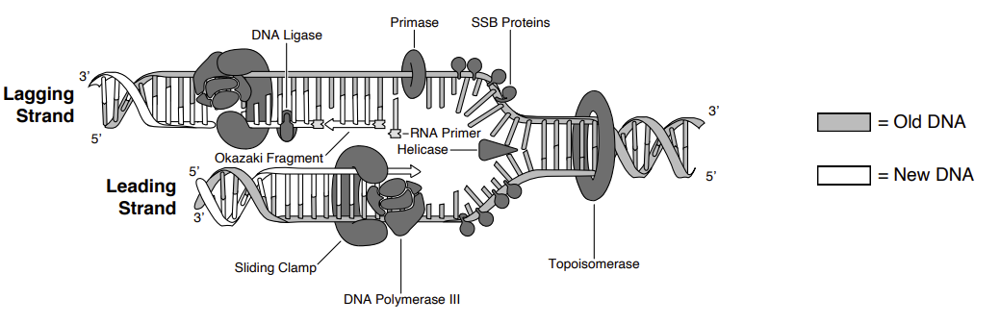
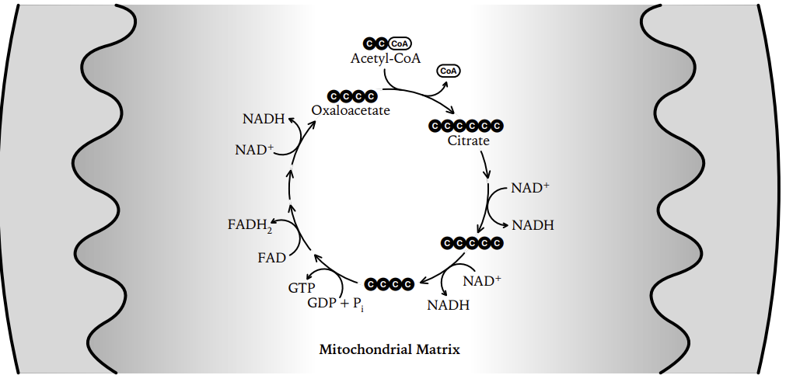
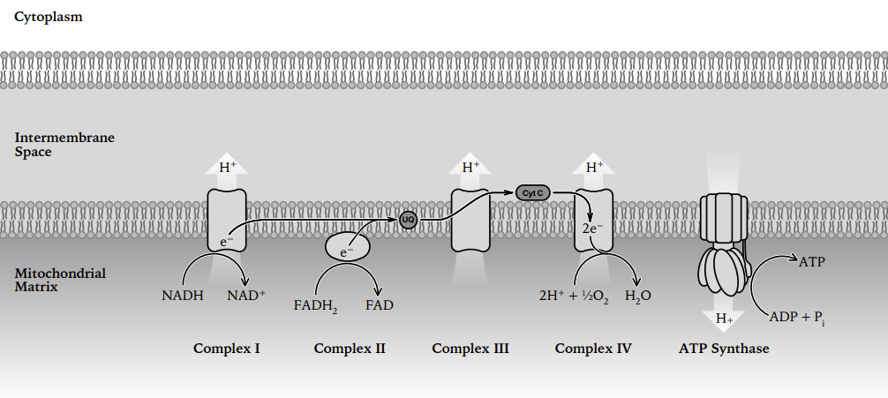
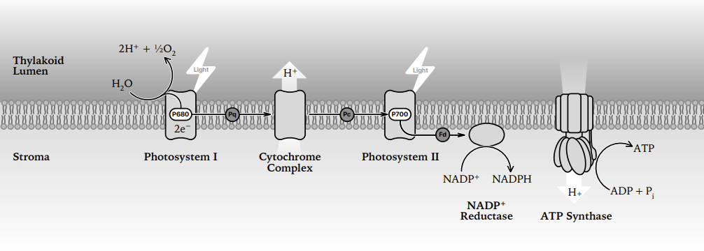
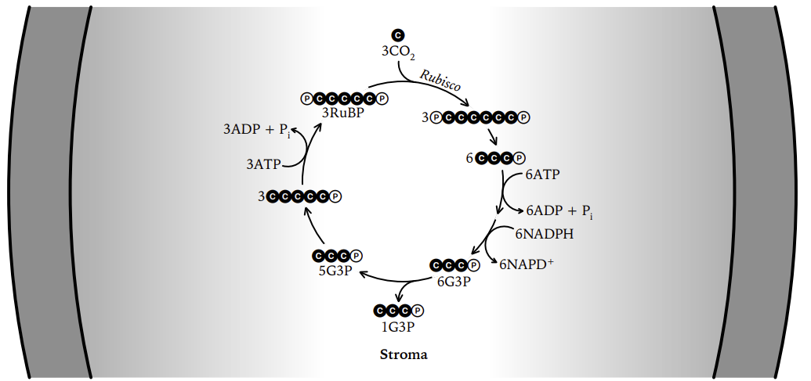
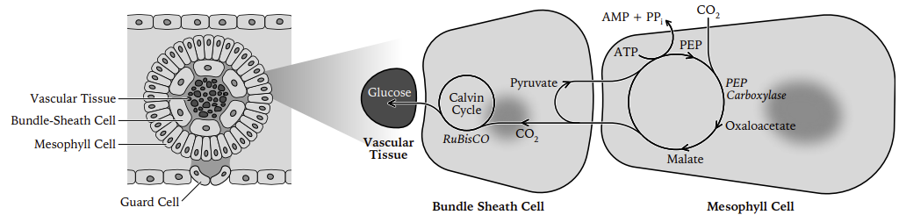

Amino acids
Every amino acid = central α-carbon + amino group (–NH2) + carboxyl group (–COOH) + hydrogen + R group (side chain). Only the R group differs.
Zwitterion, in words: at pH 7 the α-amino group acts as a base and picks up a proton (–NH₃⁺, positive), while the α-carboxyl acts as an acid and loses one (–COO⁻, negative). Chirality: the α-carbon carries four different groups, so every amino acid except glycine is chiral. L and D forms are mirror images — they differ only in how –COOH, –NH₂, –H and R are arranged around the α-carbon — and proteins are built exclusively from L-amino acids. Hydrophobicity runs nonpolar > polar uncharged > charged, so for example Leu > Ser > Glu.
The 20 standard amino acids
| Name | 3-letter | 1-letter | Class | Charge (pH 7) | Key characteristics |
|---|---|---|---|---|---|
| Glycine | Gly | G | Nonpolar | Neutral | R = H. Smallest, achiral, very flexible; fits tight turns. |
| Alanine | Ala | A | Nonpolar | Neutral | R = CH₃. Small, hydrophobic, helix-friendly. |
| Valine * | Val | V | Nonpolar, branched | Neutral | Hydrophobic core. Glu→Val swap causes sickle-cell. |
| Leucine * | Leu | L | Nonpolar, branched | Neutral | Very common; buried in hydrophobic core; leucine zippers. |
| Isoleucine * | Ile | I | Nonpolar, branched | Neutral | Hydrophobic, two chiral centers. |
| Methionine * | Met | M | Nonpolar, sulfur | Neutral | Contains S (thioether). Start codon AUG; first residue of every protein. |
| Proline | Pro | P | Nonpolar, cyclic | Neutral | Side chain bonds back to N (imino acid). Rigid, so it acts as a helix breaker, found in turns. |
| Phenylalanine * | Phe | F | Nonpolar, aromatic | Neutral | Big hydrophobic benzene ring; stacking interactions. |
| Tryptophan * | Trp | W | Nonpolar, aromatic | Neutral | Largest residue, indole ring; absorbs at 280 nm (protein quantitation). |
| Serine | Ser | S | Polar uncharged | Neutral | –OH. Phosphorylation site; serine-protease active sites. |
| Threonine * | Thr | T | Polar uncharged | Neutral | –OH + methyl. Phosphorylation site; O-glycosylation. |
| Cysteine | Cys | C | Polar, sulfur | Neutral (pKa 8.3) | –SH thiol. Two Cys form a disulfide bond, the only covalent bond in tertiary structure. |
| Tyrosine | Tyr | Y | Polar, aromatic | Neutral (pKa 10.1) | Aromatic + –OH; phosphorylation target; absorbs at 280 nm. |
| Asparagine | Asn | N | Polar uncharged | Neutral | Amide of Asp; N-linked glycosylation site. |
| Glutamine | Gln | Q | Polar uncharged | Neutral | Amide of Glu; nitrogen transport. |
| Aspartic acid | Asp | D | Acidic | Negative (pKa 3.9) | Carboxylate side chain; salt bridges, metal binding, catalysis. |
| Glutamic acid | Glu | E | Acidic | Negative (pKa 4.3) | One CH₂ longer than Asp; neurotransmitter. |
| Lysine * | Lys | K | Basic | Positive (pKa 10.5) | Long –NH₃⁺ chain; binds DNA backbone; acetylation site on histones. |
| Arginine | Arg | R | Basic | Positive (pKa 12.5) | Guanidinium group; the most basic side chain, positive at nearly any pH; DNA binding. |
| Histidine * | His | H | Basic, aromatic | Partly + (pKa 6.0) | Only side chain that ionizes near physiological pH, so it handles buffering and acid/base catalysis; metal coordination. |
* = essential in humans (9 total: His, Ile, Leu, Lys, Met, Phe, Thr, Trp, Val; mnemonic "PVT TIM HaLL").
Drill the 20 amino acids 0 / 20
Peptide bond
A peptide bond is covalent, joins the carboxyl carbon of one residue to the amino nitrogen of the next, and forms by condensation (a water is removed). All three statements are true at once, which is how exam questions usually phrase it.
The genetic code
- Triplet: 3 mRNA bases = 1 codon = 1 amino acid. 4³ = 64 codons.
- Degenerate/redundant: 61 sense codons for 20 amino acids; most redundancy at the 3rd base (wobble).
- Unambiguous: one codon never codes for two amino acids.
- Nearly universal across all organisms (mitochondria are the exception).
- Non-overlapping, read continuously from a fixed start, so insertions or deletions cause frameshifts.
- AUG = start (Met; fMet in bacteria). UAA, UAG, UGA = stop (no tRNA; release factors bind).
- Watch the direction. Codons are read 5'→3'. If a sequence is written 3'→5', reverse it before translating — e.g. 3'-AGGAGGAUGGUUUCGUAAA-5' is 5'-AAAUGCUUUGGUAGGAGGA-3', which reads AUG·CUU·UGG·UAG = Met–Leu–Trp–stop.
Codon table (mRNA 5'→3')
| 1st ↓ / 2nd → | U | C | A | G | 3rd |
|---|---|---|---|---|---|
| U | Phe (F) | Ser (S) | Tyr (Y) | Cys (C) | U |
| Phe (F) | Ser (S) | Tyr (Y) | Cys (C) | C | |
| Leu (L) | Ser (S) | STOP | STOP | A | |
| Leu (L) | Ser (S) | STOP | Trp (W) | G | |
| C | Leu (L) | Pro (P) | His (H) | Arg (R) | U |
| Leu (L) | Pro (P) | His (H) | Arg (R) | C | |
| Leu (L) | Pro (P) | Gln (Q) | Arg (R) | A | |
| Leu (L) | Pro (P) | Gln (Q) | Arg (R) | G | |
| A | Ile (I) | Thr (T) | Asn (N) | Ser (S) | U |
| Ile (I) | Thr (T) | Asn (N) | Ser (S) | C | |
| Ile (I) | Thr (T) | Lys (K) | Arg (R) | A | |
| Met (M) START | Thr (T) | Lys (K) | Arg (R) | G | |
| G | Val (V) | Ala (A) | Asp (D) | Gly (G) | U |
| Val (V) | Ala (A) | Asp (D) | Gly (G) | C | |
| Val (V) | Ala (A) | Glu (E) | Gly (G) | A | |
| Val (V) | Ala (A) | Glu (E) | Gly (G) | G |
Mutation types
| Type | What changes | Effect on protein |
|---|---|---|
| Silent | Base change, same amino acid (usually 3rd position) | None |
| Missense, conservative | New amino acid with similar chemistry (e.g. Leu→Ile) | Often tolerated |
| Missense, non-conservative | New amino acid, different chemistry (e.g. Glu→Val) | Can destroy function (sickle-cell) |
| Nonsense | Codon → STOP | Truncated, usually non-functional |
| Frameshift | Insertion/deletion not a multiple of 3 | Everything downstream garbled; usually the most severe |
Central dogma
Exceptions and extensions to the dogma
| Case | What it shows |
|---|---|
| Reverse transcriptase | Copies RNA → DNA, so information can flow backwards. In a retrovirus the DNA copy integrates into the host chromosome as a provirus, which is then replicated and transcribed along with host DNA. |
| Ribozymes | RNA itself can catalyse reactions (peptidyl transferase, self-splicing introns). One molecule can both carry information and act on it, the basis of the RNA-world idea. |
| RNA interference | Small RNAs load into a complex that finds complementary mRNA and either cleaves it or blocks its translation, silencing the gene. |
| Non-coding RNA | tRNA, rRNA, microRNA and many regulatory RNAs are functional as RNA and are never translated into protein. |
| Self-splicing introns, RNase P | Group I and group II introns excise themselves with no protein enzyme, and RNase P is a catalytic RNA. Cech and Altman’s work on these established RNA catalysis. |
| Telomerase | A reverse transcriptase that carries its own RNA template, using it to add repeats to chromosome ends. |
| Epigenetic inheritance | Heritable changes in expression with no change in DNA sequence — DNA methylation and chromatin marks that survive division. |
| Tools built from all this | Knockout / knockdown inactivates a gene so its function can be read off the phenotype; antisense oligonucleotides base pair with a chosen transcript to block it. Both get their specificity from complementarity. |
| Prions | A misfolded protein templates the misfolding of normal copies: a trait transmitted by conformation alone, with no nucleic acid. |
Macromolecules
| Class | Monomer | Bond | Elements | Function / notes |
|---|---|---|---|---|
| Carbohydrates | Monosaccharide (glucose) | Glycosidic | C H O (1:2:1) | Energy + structure. Starch/glycogen = storage; cellulose/chitin/peptidoglycan = structure. |
| Lipids | Not true polymers: glycerol + fatty acids | Ester | C H O (little O) | Hydrophobic. Saturated = no C=C, solid; unsaturated = C=C kinks, liquid. Phospholipids are amphipathic → bilayer. Steroids = 4 fused rings. |
| Proteins | Amino acid | Peptide (amide) | C H O N (S) | Enzymes, structure, transport, signaling, defense. Most functionally diverse. |
| Nucleic acids | Nucleotide | Phosphodiester | C H O N P | Information storage/transfer. Nucleotide = phosphate + 5-carbon sugar + nitrogenous base. |
Naming and detail: two sugars joined by a glycosidic bond make a disaccharide (maltose, sucrose, lactose). The base is joined to the 1' carbon of the sugar by an N-glycosidic bond. Sugar + nitrogenous base = a nucleoside; add one or more phosphates and it is a nucleotide. So adenine + ribose = adenosine (a ribonucleoside); add three phosphates and it is ATP (a nucleotide); swap in deoxyribose and it is deoxyadenosine. Polymerases build nucleic acids from nucleoside triphosphates (NTPs for RNA, dNTPs for DNA), releasing pyrophosphate as each one is added to the free 3'-OH. Cellulose and starch are both glucose polymers, and the difference is the stereochemistry of the glycosidic linkage: β-1,4 gives straight, hydrogen-bonded, indigestible fibres, while α-1,4 gives a helical, digestible polymer. (α- and β-glucose are the same sugar differing only in the orientation of one hydroxyl on the ring; animals carry the enzymes for α-1,4 links but not β-1,4, which is why we digest starch and not cellulose.) A nucleic acid strand has 5'→3' polarity: the two ends are chemically different, one carrying a free 5' phosphate and the other a free 3'-OH, and synthesis only ever adds to that 3'-OH.
Lipids and sugars, a few more details: a triglyceride is glycerol + three fatty acids; swap one fatty acid for a phosphate head group and it is a phospholipid. Steroids (cholesterol) are four fused rings, not chains; cholesterol wedges between phospholipids and moderates fluidity — it stiffens a warm membrane and stops a cold one packing solid. Membranes are a fluid mosaic because lipids and many proteins diffuse laterally in the plane of the sheet while rarely flipping between leaflets. Chitin is a glucose polymer whose units carry nitrogen (N-acetylglucosamine). A glycoprotein is a protein with covalently attached carbohydrate, common on secreted and cell-surface proteins. A polysaccharide of one repeated sugar cannot store information; nucleic acids can because four distinguishable subunits sit in a defined sequence.
DNA vs RNA
| DNA | RNA | |
|---|---|---|
| Sugar | Deoxyribose (no 2'-OH) | Ribose (2'-OH → less stable) |
| Bases | A T G C | A U G C |
| Strands | Double helix, antiparallel | Usually single, folds on itself |
| Role | Long-term storage | mRNA message, tRNA adaptor, rRNA catalytic core |
Bonds and non-covalent forces
- C, H, N and O make up about 99% of the atoms in a cell. Chemistry is decided by the electrons, specifically the valence (outer-shell) ones: sodium 2311Na has 11 electrons — 2, 8, then 1 in the outer shell — so it forms one bond or loses one electron.
- Isotopes differ only in neutron count: 18O has two more neutrons than 16O, same 8 protons, same chemistry — which is what makes isotope labelling possible.
- Ions form when an electron moves across: Na hands its valence electron to Cl, leaving Na⁺ (more protons than electrons) and Cl⁻. The two then attract electrostatically.
- Bond length is a property of the two atoms involved, and settles where attraction and repulsion balance. Push closer and repulsion rises steeply.
- Strength ranking in cells: covalent > ionic > hydrogen > van der Waals. A hydrogen bond needs a hydrogen already in a polar covalent bond (on N, O or F) plus a second electronegative atom to accept it — it is non-covalent.
- Water self-ionizes: 2 H₂O ⇌ H₃O⁺ + OH⁻. Each pH unit is a factor of ten, so pH 5 has 100× the H⁺ of pH 7.
- “Organic” in chemistry means carbon-based, nothing to do with farming: sugar is organic, water and sea salt are not.
| Interaction | Relative strength | What it is | Where it matters |
|---|---|---|---|
| Covalent (nonpolar) | Strongest (~80-100 kcal/mol) | Equal electron sharing (C–C, C–H) | Backbones of all macromolecules |
| Covalent (polar) | Strongest | Unequal sharing → partial charges (O–H, N–H) | Source of water's polarity |
| Disulfide bond | Strong covalent | Cys–S–S–Cys | Locks tertiary structure of secreted proteins |
| Ionic / salt bridge | Moderate (weak in water) | Full + attracts full – | Asp/Glu with Lys/Arg; strong when buried, shielded in water |
| Hydrogen bond | Weak (~1-5 kcal/mol), strong in bulk | H on N/O/F attracted to another N/O | DNA base pairing, α-helix, β-sheet, water properties |
| Van der Waals | Weakest | Transient dipoles; attractive at an optimal separation but sharply repulsive once atoms are pushed closer than the sum of their van der Waals radii | Tight-packed protein interiors, shape complementarity |
| Hydrophobic effect | Major driving force | Nonpolar groups cluster to free ordered water (entropy) | Protein folding, membrane bilayers |
Why water behaves as it does: each molecule has two hydrogens to donate and two lone pairs on oxygen to accept, so it can make up to four hydrogen bonds at once. That network is what gives water its high boiling point and specific heat, its open (less dense) ice lattice, and its ability to dissolve ions: the partial charges of several water molecules orient around an ion as a hydration shell, an ion–dipole interaction. Heating breaks hydrogen bonds faster than they reform, which weakens the network. A molecule covered in hydroxyl groups donates and accepts hydrogen bonds, so it is hydrophilic.
Base pairing
Levels of protein structure
| Level | What it is | Held together by | Examples |
|---|---|---|---|
| Primary | Linear amino acid sequence, N→C | Peptide bonds (covalent) | Encoded directly by the gene; determines all higher levels (Anfinsen) |
| Secondary | α-helix and β-pleated sheet (parallel/antiparallel), turns | H-bonds between backbone C=O and N–H | Keratin (α), silk fibroin (β). Pro breaks helices; Gly adds flexibility |
| Tertiary | Full 3-D fold of one polypeptide | R-group interactions: hydrophobic clustering, H-bonds, ionic/salt bridges, van der Waals, disulfides | Myoglobin; enzyme active site is formed here |
| Quaternary | Two or more folded subunits assembled | Same non-covalent forces, between chains | Hemoglobin (α₂β₂), collagen triple helix, DNA polymerase holoenzyme |
Coiled-coil: an α-helix whose sequence puts nonpolar residues every three or four positions shows a hydrophobic stripe running along one face (an amphipathic helix). Two or more such helices wind around each other so the stripes are buried away from water — the coiled-coil motif of keratin, myosin, and many nuclear-transport and structural proteins.
Protein families: a family is a set of proteins with a common evolutionary origin, recognizable from shared sequence and shared domains, with related — not necessarily identical — functions. Members need not share a quaternary structure or an exact sequence.
Purifying a protein: affinity chromatography holds the protein on a matrix that binds it specifically; stepping up the salt concentration screens charges and competes for ionic (electrostatic) contacts, so the protein elutes in a known fraction. Ion-exchange separates by charge, gel filtration by size, and SDS-PAGE reports size on a gel.
Also worth knowing: a domain is a compact, independently folding region of a chain that usually has its own function and recurs across many proteins. Integral membrane proteins cross the bilayer through stretches rich in hydrophobic residues that match the lipid interior. A mutation in the tightly packed hydrophobic core destabilizes far more than one on the surface, because the core has no room for a charged or bulky replacement. Molecular chaperones raise folding yield by binding exposed hydrophobic surfaces and preventing aggregation — the sequence still specifies the final structure (Anfinsen). Atomic-resolution structures come from X-ray crystallography (and cryo-EM / NMR).
Enzymes, reactions and ATP
Enzyme basics
- Biological catalyst that lowers activation energy (Ea), speeds the reaction, is not consumed and does not change ΔG or equilibrium.
- Active site binds substrate; induced fit means the site reshapes around the substrate.
- Specific for substrate and reaction. Named for what they act on: -ase.
- Sensitive to temperature and pH; beyond the optimum, denaturation kills activity.
- Cofactors = inorganic (Mg²⁺, Zn²⁺); coenzymes = organic (NAD⁺, FAD, coenzyme A, often from vitamins).
- Kinetics: Vmax is reached when every active site is saturated with substrate; Km is the substrate concentration giving half Vmax, so a low Km means high affinity. A competitive inhibitor raises apparent Km and leaves Vmax unchanged; a noncompetitive one lowers Vmax.
- Michaelis–Menten relates velocity to substrate concentration through Km and Vmax, giving a hyperbola. The Lineweaver–Burk double-reciprocal plot straightens it so Km and Vmax can be read off the intercepts and inhibitor types told apart. Sigmoidal (S-shaped) kinetics instead signal cooperative binding between subunits, the hallmark of an allosterically regulated enzyme.
- Zymogens (pepsinogen, trypsinogen) are inactive precursors switched on by cleavage, which keeps digestive enzymes from destroying the cell that makes them.
- Favourable ≠ fast. A negative ΔG says nothing about rate: a large activation-energy barrier keeps a favourable reaction immeasurably slow until an enzyme lowers it by stabilizing the transition state. An enzyme cannot make a positive-ΔG reaction go; only coupling it to a strongly exergonic one (ATP hydrolysis) can, by making the summed ΔG negative.
| Regulation | Binds where | Effect | Overcome by more substrate? |
|---|---|---|---|
| Competitive inhibitor | Active site | Blocks substrate binding | Yes |
| Noncompetitive / allosteric inhibitor | Allosteric site | Changes active-site shape | No |
| Allosteric activator | Allosteric site | Stabilizes the active form | none |
| Feedback inhibition | Allosteric site of the first enzyme | End product shuts down its own pathway | No |
Energy and ATP
| Term | Meaning |
|---|---|
| Exergonic (ΔG < 0) | Releases energy, spontaneous; catabolism (breakdown) |
| Endergonic (ΔG > 0) | Requires energy input; anabolism (building) |
| Coupled reaction | ATP hydrolysis drives an endergonic reaction |
| ATP structure | Adenine + ribose + 3 phosphates; energy sits in the repulsion of the negative phosphates |
| ATP → ADP + Pi | Exergonic, ≈ –7.3 kcal/mol; the molecule cells spend to pay for work, and it is recycled constantly. The free energy comes from relief of charge repulsion between the negative phosphates plus resonance stabilization of the products — not from any special "high-energy bond" |
| Redox | OIL RIG: Oxidation Is Loss of electrons, Reduction Is Gain. NAD⁺/FAD are electron carriers (reduced to NADH/FADH₂). |
Types of organisms and cell composition
- What a cell is made of: about 70% water by mass, so water is the most abundant molecule. Of the dry weight, protein is roughly 50% — the most abundant macromolecule. C, H, O and N account for ~96% of the atoms; P and S are essential but minor.
- Three domains: Woese compared small-subunit rRNA sequences and found archaea are as distinct from bacteria as they are from eukaryotes. Every cell, in all three domains, translates mRNA on ribosomes; nuclei, mitochondria and histones are eukaryote features.
- No nucleus + a cell wall + one circular chromosome tells you only that a cell is prokaryotic. Separating bacteria from archaea needs membrane-lipid chemistry or sequence data.
- Archaea vs bacteria, chemically: archaeal membranes use ether-linked lipids and their walls have no peptidoglycan; bacteria use ester-linked lipids and peptidoglycan walls.
- One genome, many cell types: every cell of a multicellular organism carries the same DNA, so differentiation comes from differential gene expression — which in turn needs cell-to-cell signalling and coordinated regulation that a single-celled organism can do without.
- Why E. coli: the standard model organism because it divides fast (~20 min), is cheap and easy to culture, and is readily manipulated genetically (plasmids, phage, mutant collections). Yeast is the next step up: a single-celled eukaryote with a nucleus and organelles, so eukaryotic cell biology can be studied with microbial-scale genetics and screens.
| Feature | Prokaryote (Bacteria, Archaea) | Eukaryote |
|---|---|---|
| Nucleus | None; a nucleoid region instead | True membrane-bound nucleus |
| DNA | Single circular chromosome + plasmids | Multiple linear chromosomes with histones |
| Organelles | No membrane-bound organelles | Mitochondria, ER, Golgi, lysosomes, (chloroplasts) |
| Ribosomes | 70S, made of 30S and 50S subunits | 80S, made of 40S and 60S subunits; 70S inside mitochondria |
| Compartments | One compartment, so every reaction shares the same conditions | Membrane-bound compartments run incompatible reactions at once, each at its own pH, redox state and enzyme set |
| Cell wall | Peptidoglycan (bacteria) | Cellulose (plants), chitin (fungi), none in animals |
| Size | ~1-10 µm | ~10-100 µm |
| Transcription/translation | Coupled, in the same compartment, with no introns | Separated by the nuclear envelope; mRNA processed first |
| Division | Binary fission | Mitosis / meiosis |
Why the subunit values do not add up: S stands for Svedberg units, which measure sedimentation during centrifugation and depend on both mass and shape. These values are not additive: 30S and 50S subunits assemble into a 70S ribosome, while 40S and 60S subunits assemble into an 80S ribosome.
Organelles: structure and function
| Organelle | Function |
|---|---|
| Nucleus | Stores DNA; site of replication and transcription; bounded by a double envelope with pores |
| Nucleolus | Makes rRNA and assembles ribosomal subunits |
| Ribosome | Protein synthesis (translation); free in cytosol or bound to rough ER |
| Rough ER | Ribosome-studded; synthesizes and folds proteins for secretion or membranes |
| Smooth ER | Lipid and steroid synthesis, detoxification, Ca²⁺ storage |
| Golgi apparatus | Modifies, sorts, tags and ships proteins for delivery |
| Lysosome | Digestive enzymes (acidic interior); breaks down waste and worn organelles |
| Peroxisome | Breaks down fatty acids; catalase uses H₂O₂ to oxidize some substances and also breaks down H₂O₂ into water and oxygen |
| Mitochondrion | ATP production: Krebs in the matrix, ETC on the cristae; own circular DNA + 70S ribosomes |
| Chloroplast | Photosynthesis: light reactions in thylakoids, Calvin cycle in stroma; own DNA |
| Vacuole | Storage, waste, turgor pressure (large central vacuole in plants) |
| Plasma membrane | Selectively permeable phospholipid bilayer; transport and signaling (fluid mosaic model) |
| Cell wall | Rigid support: cellulose (plants), chitin (fungi), peptidoglycan (bacteria) |
| Cytoskeleton | Microfilaments (actin), intermediate filaments, microtubules; shape, transport and division |
| Centrosome / centrioles | Organizes microtubules and the mitotic spindle (animals) |
| Cilia & flagella | Movement; typical motile eukaryotic structures have a "9+2" arrangement: nine outer microtubule doublets surrounding two central single microtubules (9 × 2 + 2 = 20 microtubules) |
Endosymbiotic theory: mitochondria and chloroplasts were once free-living bacteria. They kept double membranes, circular DNA and 70S ribosomes, and they still divide by binary fission.
Model organisms and “omics”
| Organism | Why it gets used |
|---|---|
| E. coli (bacterium) | ~20 min doubling, cheap, plasmids and phage, huge mutant collections. Prokaryotic, so no organelles or splicing. |
| S. cerevisiae (yeast) | Single-celled eukaryote: nucleus, organelles, splicing — with microbial-scale genetics and screens. |
| C. elegans (nematode worm) | Grows fast, transparent body and an invariant cell lineage, so fluorescently tagged proteins can be watched live during nervous-system development. RNAi was discovered here. |
| Drosophila (fruit fly) | Short generations, large broods, few chromosomes, deep genetic toolkit; the foundation of linkage mapping and developmental genetics. |
| Mouse, zebrafish | Vertebrates: closest to human physiology, used when tissue and organ context matters. |
| Arabidopsis | The plant equivalent: small genome, fast seed-to-seed cycle. |
Match the organism to the question: for localization and interaction of proteins during nerve development, transparency and live imaging beat convenience — the worm wins, and yeast (no nervous system) does not.
The “omics” layers: the genome is all the DNA, the transcriptome is everything actually transcribed in a given cell, and the proteome is the proteins present. Comparing genome with transcriptome is how whole classes of non-coding RNAs were found: they are transcribed but never appear in the proteome.
Where eukaryotes came from: beyond endosymbiosis for the organelles, the inside-out model proposes that an archaeal cell extended protrusions around its bacterial partner; fusing those protrusions would generate the nuclear envelope and the ER in one stroke. It is an explanatory hypothesis, not a settled account.
The 70S/80S difference is why several antibiotics (tetracyclines, aminoglycosides, macrolides) block bacterial translation without touching the host’s own ribosomes. The same logic picks the best drug target in general: hit something bacteria have and we do not — blocking Shine–Dalgarno pairing with 16S rRNA stops bacterial initiation, while eukaryotic ribosomes scan from a cap instead and are untouched.
DNA structure and replication
- Double helix, antiparallel strands, sugar-phosphate backbone outside, bases inside.
- Backbone joined by phosphodiester bonds (5' phosphate to 3' OH); negatively charged → runs to the + electrode in a gel.
- Replication is semiconservative: each daughter duplex = 1 old + 1 new strand.
- DNA polymerase can only add to a free 3'-OH → synthesis is strictly 5'→3' and a primer is mandatory.
- B-DNA makes a full turn every ~10 base pairs (3.4 nm), leaving a wide major groove and a narrow minor groove; sequence-specific binding proteins read the edges of the bases, mostly in the major groove.
- Melting is reversible: heat separates the strands, and slow cooling lets complementary strands renature (reanneal) — the principle behind probing, blotting and PCR. Strand separation can be followed as a hyperchromic shift, a rise in absorbance at 260 nm as the bases unstack.
- Eukaryotic DNA is wrapped with histones: ~147 bp around a histone octamer makes one nucleosome, the repeating packaging unit. Supercoiling is the helix coiling on itself, set and relieved by topoisomerases.
- Replication starts at a defined origin and is bidirectional: two forks move apart, making a replication bubble. Bacteria use one origin; eukaryotes fire many in parallel, because the genomes are far larger and their polymerases slower.
- Fidelity is layered: base selection, then 3'→5' proofreading, then mismatch repair, which in bacteria tells the new strand from the template because the daughter strand is transiently unmethylated. Together they reach roughly one error per billion bases; losing proofreading raises the mutation rate by orders of magnitude.
Chromatin packing
- Least → most compact: DNA double helix → “beads on a string” nucleosomes → 30 nm fibre → chromatin looped onto a scaffold → the condensed mitotic chromosome.
- A nucleosome core is two each of H2A, H2B, H3 and H4 with ~147 bp wrapped round it; counting the linker, one nucleosome repeat ≈ 200 bp, so a stretch of 10 nucleosomes is about 2,000 bp.
- Histones are rich in lysine and arginine, positively charged at cell pH, which is what grips the negatively charged phosphate backbone. Proteins that bind RNA are often basic for exactly the same reason.
- Euchromatin is open; heterochromatin is compact and largely silent. Ranked by how likely they are to be transcribed: active euchromatin > quiescent euchromatin > facultative heterochromatin (silenced in this cell but not always) > constitutive heterochromatin (permanently packed, e.g. centromeres and telomeres).
- For most of interphase chromosomes are decondensed tangled threads, not individually visible by light microscopy; they only resolve once condensed for mitosis.
Genome counting: a “genome” is one haploid set. A human diploid cell with 46 chromosomes therefore carries two genomes, one from each parent (the amount of DNA also depends on cell-cycle stage). The mitochondrial genome is tiny — ~16.6 kb against E. coli’s ~4.6 Mb — because most genes of the bacterial ancestor were lost or transferred to the nucleus; the nucleus now encodes most mitochondrial proteins, which are made in the cytosol and imported.
Two details about the fork: the main replicative helicase in bacteria (DnaB) travels 5'→3' along the lagging-strand template, while the eukaryotic CMG helicase moves 3'→5' on the leading-strand template. And a proofreading DNA polymerase has two separate active sites in one enzyme: the polymerizing site and the 3'→5' exonuclease site, with the mispaired end shuttling between them.
Historical note: before the 1940s proteins were the favoured candidate for the genetic material, because 20 different amino acids looked capable of carrying complex information while DNA’s four bases seemed monotonous. Chargaff’s varying base ratios killed that tetranucleotide hypothesis; Hershey and Chase’s blender mattered because it sheared the empty phage coats off the cells so the two labels could be separated. Without telomerase, ends shorten every division, which acts as a replicative clock and drives senescence.

| Enzyme / protein | Job |
|---|---|
| Helicase | Unwinds the double helix at the origin, breaking H-bonds |
| Single-strand binding protein | Keeps separated strands from re-annealing |
| Topoisomerase / gyrase | Relieves supercoiling ahead of the fork |
| Primase | Lays down a short RNA primer to give pol a 3'-OH |
| DNA polymerase III | Main elongation enzyme, 5'→3'; proofreads with 3'→5' exonuclease |
| DNA polymerase I | Removes RNA primers, fills the gaps with DNA |
| DNA ligase | Seals nicks between Okazaki fragments (phosphodiester bond) |
| Telomerase | Extends chromosome ends in eukaryotes (end-replication problem) |
Transcription and translation
Transcription
| Stage | What happens |
|---|---|
| Initiation | RNA polymerase binds the promoter. Bacteria: sigma factor recognizes –10 (TATAAT, Pribnow) and –35 boxes. Eukaryotes: transcription factors + TATA box recruit RNA pol II. |
| Elongation | Reads template (antisense) strand 3'→5', builds RNA 5'→3'. No primer needed. The coding/sense strand matches the mRNA (with U for T). |
| Termination | Bacteria: rho-dependent, or intrinsic — the RNA folds into a strong hairpin followed by a run of Us whose weak A–U pairing with the template lets the transcript and polymerase fall off. Eukaryotes: poly-A signal, then cleavage. |
| Processing (eukaryotes only) | 5' methyl-guanosine cap, 3' poly-A tail, splicing of introns by the spliceosome (snRNPs) leaving exons. Alternative splicing → multiple proteins from one gene. |
Which strand, and where: the orientation of the promoter is what tells RNA polymerase which strand to use as template — it is positioned to read 3'→5' and build 5'→3', so transcription runs downstream of the promoter from +1. Promoter positions are numbered on the non-template (coding) strand, which is also the strand whose sequence the mRNA matches (U for T). A bacterial promoter spanning –35 to –7 is upstream of everything transcribed; σ factor binding there licenses initiation downstream, and nothing requires the first bases transcribed to be AUG. Order of events: σ binds RNA polymerase → the holoenzyme binds the promoter → DNA is unwound → RNA synthesis begins → σ is released during elongation.
Not every gene makes a protein. mRNA, tRNA, rRNA, telomerase RNA, snRNA, microRNA and the rest are all transcribed from genes. Four base-pairing events worth being able to name: DNA–RNA during transcription, rRNA–mRNA (16S with Shine–Dalgarno) at bacterial initiation, tRNA–mRNA during decoding, and snRNA–pre-mRNA during splicing.
The 5' cap is 7-methylguanosine joined by an unusual 5'-to-5' triphosphate bridge — backwards relative to every normal 5'→3' phosphodiester link, which is what protects the end from exonucleases. Splicing itself runs through the branch-point adenine: its 2'-OH attacks the 5' splice site, forming the lariat that is released when the exons are joined. Capping and poly-A addition are eukaryote-only; so is splicing, and prokaryotes instead translate transcripts while they are still being made.
The poly-A tail is added without a template by poly-A polymerase after the transcript is cleaved at the poly-A signal.
Eukaryotic polymerases: pol I → rRNA, pol II → mRNA, pol III → tRNA + 5S rRNA. Bacteria use a single RNA polymerase.
Translation
| Component | Role |
|---|---|
| mRNA | Carries codons; read 5'→3' |
| tRNA | Adaptor: anticodon pairs with the codon (antiparallel), carries the amino acid at its 3' CCA end |
| Aminoacyl-tRNA synthetase | Charges each tRNA with its correct amino acid. There is one synthetase per amino acid, and it does the actual reading of the code |
| Ribosome | rRNA + protein. A site accepts incoming charged tRNA, P site holds the growing chain, E site exits the empty tRNA |
| Peptidyl transferase | rRNA ribozyme activity in the large subunit; forms the peptide bond |
| Release factor | Recognizes a stop codon, hydrolyzes the chain off the tRNA |
Accuracy and finishing: the pairing that actually enforces the code at the ribosome is the anticodon of a correctly charged aminoacyl-tRNA against the codon — the ribosome checks that pairing, not the amino acid. Translation ends when a stop codon, for which no tRNA exists, reaches the A site and release factors act. Post-translational modifications then include proteolytic cleavage, glycosylation and phosphorylation (Ser/Thr/Tyr) — but not intron removal, which happens to RNA long before.
Gene regulation and the lac operon
| Lactose | Glucose | Repressor | cAMP–CAP | Transcription |
|---|---|---|---|---|
| Absent | Present | Bound to operator | Low cAMP, no CAP | Off |
| Absent | Absent | Bound to operator | High cAMP, CAP bound | Off (repressor wins) |
| Present | Present | Released (allolactose) | Low cAMP, no CAP | Low / leaky |
| Present | Absent | Released | High cAMP, CAP bound | Maximum |
Reading lac mutants
| Genotype | Phenotype | Why |
|---|---|---|
| Oc — operator mutation | Constitutive: transcribed with or without lactose | The repressor can no longer bind, so nothing holds the operon off. Cis-acting: it affects only the genes physically linked to it on the same DNA molecule. |
| I– — no functional repressor | Constitutive | Nothing binds the operator. Trans-acting: lacI makes a diffusible protein, so a good copy anywhere in the cell can rescue it. |
| Is — super-repressor | Off even when inducer is present | The altered repressor cannot bind allolactose, so it never lets go of the operator. Dominant over I+. |
| Merodiploid I–Z+ / F′ I+Z– | Inducible β-galactosidase | The wild-type repressor made from the F′ plasmid diffuses and controls the chromosomal operon, so I+ is dominant. |
Partial diploids (merodiploids, usually made with an F′ plasmid) are the classic cis/trans test: a site that only controls genes on its own molecule is cis-acting (operator, promoter), while a gene whose product diffuses through the cytoplasm is trans-acting (lacI).
Jacob and Monod built the operon model exactly this way, from mutant phenotypes in partial diploids: whichever elements could be rescued by a copy elsewhere in the cell were diffusible (trans), and the rest acted only where they sat (cis). Even when repressed the operon is slightly leaky, because the repressor occasionally falls off the operator — and it has to be, since the cell needs a few permease and β-galactosidase molecules present to notice lactose at all. A mutation in the promoter that weakens polymerase binding lowers transcription even under full induction, because the promoter sets the ceiling.
Inducible vs repressible: lac is inducible — the substrate switches it on. trp is repressible — the end product tryptophan acts as a corepressor, activating its repressor to switch the operon off when tryptophan is plentiful. Catabolic pathways are usually inducible, biosynthetic ones repressible. Ignoring lactose while glucose is around is worth it because glucose is the cheaper fuel, so the lactose enzymes would be wasted protein.
Grouping lacZ, lacY and lacA in one operon means a single polycistronic mRNA, so the whole lactose-utilization system is switched on and off together.
Cellular respiration and fermentation
| Stage | Location | Input | Output per glucose |
|---|---|---|---|
| Glycolysis | Cytosol (all cells, no O₂ needed) | Glucose (6C), 2 ATP invested | 2 pyruvate (3C), net 2 ATP (substrate-level), 2 NADH |
| Pyruvate oxidation | Mitochondrial matrix | 2 pyruvate | 2 acetyl-CoA, 2 NADH, 2 CO₂ |
| Krebs / citric acid cycle | Mitochondrial matrix | 2 acetyl-CoA | 6 NADH, 2 FADH₂, 2 ATP (GTP), 4 CO₂ |
| Electron transport + chemiosmosis | Inner mitochondrial membrane (plasma membrane in prokaryotes) | NADH, FADH₂, O₂ (final electron acceptor) | ~26-28 ATP, H₂O |
Glycolysis step by step
Cytosol · no oxygen required · universal to nearly all life · 10 enzyme steps, split into an investment phase (spend 2 ATP) and a payoff phase (make 4 ATP).
| # | Reaction | Enzyme | Energy change |
|---|---|---|---|
| ENERGY INVESTMENT PHASE (per glucose) | |||
| 1 | Glucose → glucose-6-phosphate | Hexokinase (glucokinase in liver) | –1 ATP; phosphate traps glucose inside the cell |
| 2 | G6P → fructose-6-phosphate | Phosphoglucose isomerase | none |
| 3 | F6P → fructose-1,6-bisphosphate | Phosphofructokinase-1 (PFK-1) | –1 ATP; rate-limiting / committed step. Inhibited by ATP & citrate, activated by AMP & F-2,6-BP |
| 4 | F-1,6-BP → DHAP + G3P (two 3C sugars) | Aldolase | none |
| 5 | DHAP ⇌ G3P | Triose phosphate isomerase | Now 2 × G3P, so everything below happens twice |
| ENERGY PAYOFF PHASE (×2) | |||
| 6 | G3P → 1,3-bisphosphoglycerate | G3P dehydrogenase (GAPDH) | +1 NADH each (2 total) |
| 7 | 1,3-BPG → 3-phosphoglycerate | Phosphoglycerate kinase | +1 ATP each, by substrate-level phosphorylation |
| 8 | 3-PG → 2-phosphoglycerate | Phosphoglycerate mutase | none |
| 9 | 2-PG → phosphoenolpyruvate (PEP) | Enolase | Releases H₂O, creates a high-energy bond |
| 10 | PEP → pyruvate | Pyruvate kinase | +1 ATP each, substrate-level |
Pyruvate oxidation and the Krebs (citric acid / TCA) cycle
Link reaction: pyruvate enters the matrix, and pyruvate dehydrogenase complex strips a CO₂ and attaches coenzyme A → acetyl-CoA (2C) + NADH + CO₂. Happens twice per glucose. Irreversible, so fat cannot be turned back into glucose from here.

| Step | Enzyme | Yield |
|---|---|---|
| Acetyl-CoA (2C) + oxaloacetate (4C) → citrate (6C) | Citrate synthase | none |
| Citrate → isocitrate | Aconitase | none |
| Isocitrate → α-ketoglutarate (5C) | Isocitrate dehydrogenase (rate-limiting) | NADH + CO₂ |
| α-ketoglutarate → succinyl-CoA (4C) | α-ketoglutarate dehydrogenase | NADH + CO₂ |
| Succinyl-CoA → succinate | Succinyl-CoA synthetase | GTP/ATP (substrate-level) |
| Succinate → fumarate | Succinate dehydrogenase (= Complex II, sits in the inner membrane) | FADH₂ |
| Fumarate → malate | Fumarase (+H₂O) | none |
| Malate → oxaloacetate | Malate dehydrogenase | NADH |
Electron transport chain and chemiosmosis
| Complex | Name | Electron flow | H⁺ pumped per 2 electrons |
|---|---|---|---|
| I | NADH dehydrogenase | NADH → coenzyme Q | 4 |
| II | Succinate dehydrogenase | FADH₂ → coenzyme Q (enters after complex I) | 0, which is why FADH₂ yields less ATP |
| III | Cytochrome bc₁ | Q → cytochrome c | 4 |
| IV | Cytochrome c oxidase | Electrons from cytochrome c reduce oxygen: ½ O₂ + 2 H⁺ + 2 e⁻ → H₂O. These H⁺ are consumed in water formation, separately from those pumped. | 2 |
| V | ATP synthase | Not a carrier; H⁺ flows back through it and it phosphorylates ADP (~4 H⁺ per ATP) | none |
Carriers are arranged in order of increasing electronegativity; oxygen is the final electron acceptor. Block O₂ and the entire chain backs up: NAD⁺ is never regenerated, Krebs stops, and only glycolysis/fermentation continues.
| Poison / uncoupler | Target | Result |
|---|---|---|
| Rotenone | Complex I | Electron flow stops → no gradient → no ATP |
| Antimycin A | Complex III | |
| Cyanide, carbon monoxide, azide | Complex IV | |
| Oligomycin | ATP synthase | Gradient builds but cannot be spent |
| DNP, thermogenin (brown fat) | Membrane (uncoupler) | H⁺ leaks back; transport runs hot, ATP is not made, and energy is released as heat |

Overall: C₆H₁₂O₆ + 6 O₂ → 6 CO₂ + 6 H₂O. Label every carbon of glucose with 14C and the label comes out in CO₂; the water is made at the end of the electron transport chain, where oxygen accepts the electrons. Pyruvate made in the cytosol is carried into the matrix and oxidatively decarboxylated there by the pyruvate dehydrogenase complex; coenzyme A picks up and activates the resulting two-carbon acetyl group for entry into the TCA cycle. After glycolysis and the cycle the carbon is gone as CO₂ but most of the energy is still held as NADH, which is why blocking the chain strands it there. Fermentation earns no extra ATP: it hands electrons to an organic acceptor purely to regenerate NAD⁺, which keeps glycolysis running and lets tissues work while oxygen is short.
Why the chain runs the way it does: the complexes are ordered by increasing electron affinity, so electrons fall stepwise and release energy in usable amounts; that energy is stored first as a proton-motive force, which is both a pH gradient and a membrane voltage, before ATP synthase spends it. Blocking ATP synthase while the chain still runs lets the gradient build until back-pressure slows electron transport — the two are coupled. NADH donates at complex I; FADH₂ enters at complex II, skipping one pumping site, which is why it yields less ATP.
ATP tally per glucose
| Stage | ATP (direct) | NADH | FADH₂ | ATP from carriers |
|---|---|---|---|---|
| Glycolysis | 2 (net, substrate-level) | 2 (cytosolic) | none | 3-5 (depends on shuttle) |
| Pyruvate oxidation (×2) | 0 | 2 | none | 5 |
| Krebs (×2 turns) | 2 (GTP, substrate-level) | 6 | 2 | 15 + 3 |
| Total | 4 substrate-level | 10 | 2 | ~26-28 oxidative |
Fermentation
Fermentation makes no ATP of its own. Its only job is to oxidize NADH back to NAD⁺ so glycolysis can keep turning. Otherwise the cell runs out of NAD⁺ within seconds and even the 2 ATP stop.
| Type | Organism | Pathway | Products per glucose | Net ATP |
|---|---|---|---|---|
| Alcoholic | Yeast (Saccharomyces cerevisiae), Zymomonas | Pyruvate → acetaldehyde + CO₂ (pyruvate decarboxylase) → ethanol (alcohol dehydrogenase, oxidizes NADH) | 2 ethanol + 2 CO₂ | 2 |
| Lactic acid | Muscle cells, Lactobacillus | Pyruvate + NADH → lactate (lactate dehydrogenase) in one step, with no CO₂ | 2 lactate | 2 |
Yeast: aerobic vs anaerobic side by side
| Aerobic (respiration, O₂ present) | Anaerobic (alcoholic fermentation, no O₂) | |
|---|---|---|
| Overall equation | C₆H₁₂O₆ + 6 O₂ → 6 CO₂ + 6 H₂O | C₆H₁₂O₆ → 2 C₂H₅OH + 2 CO₂ |
| Pathways used | Glycolysis + pyruvate oxidation + Krebs + ETC | Glycolysis only, then the 2-step ethanol branch |
| ATP per glucose | ~30-32 (yeast ≈ 30, glycerol-phosphate shuttle) | 2 |
| ATP source | Mostly oxidative phosphorylation (chemiosmosis) | Substrate-level only |
| Final electron acceptor | O₂ → water | Acetaldehyde (an organic molecule) → ethanol |
| Carbon products | CO₂ + H₂O, glucose fully oxidized | Ethanol + CO₂; ethanol still holds most of the energy, which is why it burns |
| Efficiency | ~15-16× more ATP; ~34% of glucose energy captured | ~2% captured; yeast must burn glucose fast to compensate |
| Where CO₂ comes from | Pyruvate oxidation + Krebs | Pyruvate decarboxylase step only |
Anaerobic respiration ≠ fermentation
| Aerobic respiration | Anaerobic respiration | Fermentation | |
|---|---|---|---|
| Final electron acceptor | O₂ | Inorganic, not O₂ (NO₃⁻, SO₄²⁻, Fe³⁺) | Organic (pyruvate, acetaldehyde) |
| Uses an ETC? | Yes | Yes | No |
| ATP yield | ~30-32 | Intermediate (fewer than aerobic) | 2 |
| Examples | Most eukaryotes | Denitrifying and sulfate-reducing bacteria | Yeast, muscle, Lactobacillus |
Other fuels entering the pathway
| Fuel | Broken into | Entry point |
|---|---|---|
| Fats (triglycerides) | Glycerol; fatty acids via β-oxidation | Glycerol → G3P (glycolysis); fatty acids → acetyl-CoA (Krebs). Most ATP per gram, about 9 kcal/g against 4 for carbs |
| Proteins | Amino acids, deaminated (amino group → urea) | Pyruvate, acetyl-CoA, or Krebs intermediates depending on the residue |
| Other sugars | Fructose, galactose, glycogen | Converted into glycolysis intermediates |
Photosynthesis
6 CO₂ + 6 H₂O + light → C₆H₁₂O₆ + 6 O₂. The process is endergonic, anabolic and redox: CO₂ is reduced, water is oxidized. Respiration's balance sheet run backwards.
Chloroplast structure and pigments
| Part | What happens there |
|---|---|
| Thylakoid membrane (stacked into grana) | Light-dependent reactions: photosystems, ETC, ATP synthase all embedded here |
| Thylakoid lumen (inside the disc) | Where H⁺ accumulates; water is split facing this space |
| Stroma (fluid around the thylakoids) | Calvin cycle; also holds chloroplast DNA and 70S ribosomes |
| Double outer membrane | Envelope; evidence for endosymbiotic origin |
- Chlorophyll a, the only pigment in the reaction center; absorbs blue-violet (~430 nm) and red (~662 nm), reflects green.
- Chlorophyll b + carotenoids (carotenes, xanthophylls) = accessory pigments; widen the range absorbed and dissipate excess energy (photoprotection). Visible in fall once chlorophyll degrades.
- Absorption spectrum = light a pigment takes in. Action spectrum = light that actually drives photosynthesis. They match closely. Engelmann's bacteria clustered in red and blue light, proving chlorophyll drives the process.
- Antenna complex harvests photons and funnels the energy to the reaction-center chlorophyll, which passes an excited electron to the primary electron acceptor.
Light-dependent reactions (thylakoid membrane)

- PSII (P680) absorbs a photon; an excited electron leaves for the primary acceptor. P680⁺ is the strongest biological oxidizer known.
- Photolysis: the oxygen-evolving complex splits water to replace that electron → releases O₂ and dumps H⁺ into the lumen.
- Electron travels down the chain (PQ → cytochrome b₆f → PC); the b₆f complex pumps H⁺ into the lumen.
- PSI (P700) re-energizes the electron with a second photon → ferredoxin → NADP⁺ reductase makes NADPH in the stroma.
- Chemiosmosis: H⁺ flows from lumen back to stroma through ATP synthase = photophosphorylation → ATP.
| Noncyclic (linear) | Cyclic | |
|---|---|---|
| Photosystems used | PSII → PSI | PSI only (electron loops back to b₆f) |
| Products | ATP + NADPH + O₂ | ATP only, with no NADPH and no O₂ |
| Why | Standard route | Tops up ATP when the Calvin cycle needs more ATP than NADPH (it needs 3:2) |
Light-independent reactions: the Calvin cycle (stroma)
Called "dark reactions" but they run in daylight. They just do not use photons directly, they spend the ATP and NADPH the light reactions made.
| Phase | What happens | Cost per 3 CO₂ |
|---|---|---|
| 1. Carbon fixation | Rubisco attaches CO₂ to RuBP (5C); the 6C product immediately splits into two 3-phosphoglycerate (3-PGA, 3C) | none |
| 2. Reduction | 3-PGA → 1,3-BPG (uses ATP) → G3P (uses NADPH) | 6 ATP + 6 NADPH |
| 3. Regeneration of RuBP | 5 of the 6 G3P are rearranged back into 3 RuBP; 1 G3P exits | 3 ATP |

Photorespiration and the C3 / C4 / CAM strategies
The problem: rubisco also accepts O₂ instead of CO₂. On hot, dry days stomata close to save water, so CO₂ inside the leaf falls, O₂ builds up, and rubisco starts fixing O₂. That is photorespiration: it consumes ATP, releases CO₂ and makes no sugar, wasting up to ~25% of the plant's fixed carbon.
| C3 | C4 | CAM | |
|---|---|---|---|
| First stable product | 3-PGA (3C) | Oxaloacetate → malate (4C) | Oxaloacetate → malate (4C) |
| Initial fixing enzyme | Rubisco | PEP carboxylase, high affinity for CO₂, ignores O₂ | PEP carboxylase |
| Separation strategy | None; everything happens in mesophyll cells | Spatial: CO₂ fixed in mesophyll, pumped to bundle-sheath cells where rubisco works (Kranz anatomy) | Temporal: stomata open at night to fix CO₂ into malate (stored in vacuole); Calvin cycle runs by day with stomata shut |
| Photorespiration | High in heat/drought | Very low | Very low |
| Water efficiency | Lowest | Better | Best |
| Energy cost | Cheapest per CO₂ | Extra ATP to regenerate PEP | Extra ATP; slowest growth |
| Best conditions | Cool, moist, moderate light | Hot, sunny, moderately dry | Arid deserts |
| Examples | Wheat, rice, soybean, most trees (~85% of species) | Corn, sugarcane, sorghum, crabgrass | Cacti, succulents, pineapple, agave, jade plant |

Jagendorf’s acid-bath experiment: isolated chloroplasts soaked at low pH and then shifted into a higher-pH buffer made ATP in the dark. An artificial proton gradient alone drives ATP synthesis, so light is only the means of making the gradient. Photosystems I and II are numbered by discovery order, not by pathway order — electrons actually run PSII → PSI.
Photosynthesis vs respiration
| Photosynthesis | Cellular respiration | |
|---|---|---|
| Equation | 6 CO₂ + 6 H₂O → C₆H₁₂O₆ + 6 O₂ | C₆H₁₂O₆ + 6 O₂ → 6 CO₂ + 6 H₂O |
| Energy | Endergonic; stores light energy in bonds | Exergonic; releases it as ATP |
| Organelle | Chloroplast | Mitochondrion |
| Electron carrier | NADP⁺ / NADPH | NAD⁺ / NADH, FAD / FADH₂ |
| Carbon | CO₂ reduced to sugar | Sugar oxidized to CO₂ |
| Who does it | Plants, algae, cyanobacteria | Essentially all organisms, including plants, day and night |
Mendel's laws and pedigrees
- Law of segregation: the two alleles of a gene separate during meiosis; each gamete gets one.
- Law of independent assortment: genes on different chromosomes assort independently.
- Dominance: the dominant allele masks the recessive in a heterozygote.
- Genotype = alleles carried; phenotype = trait shown. Homozygous (AA/aa) vs heterozygous (Aa).
| Cross | Genotypic ratio | Phenotypic ratio |
|---|---|---|
| Monohybrid Aa × Aa | 1 AA : 2 Aa : 1 aa | 3 : 1 |
| Dihybrid AaBb × AaBb | none | 9 : 3 : 3 : 1 |
| Testcross Aa × aa | 1 Aa : 1 aa | 1 : 1 (reveals unknown genotype) |
| Incomplete dominance Aa | 1 : 2 : 1 | 1 : 2 : 1 (blended, e.g. pink snapdragons) |
| Codominance | 1 : 2 : 1 | Both alleles fully expressed (AB blood type) |
Beyond simple dominance: ABO blood type shows multiple alleles in a population (three) with A and B codominant. Pleiotropy is one gene affecting several unrelated traits (the sickle allele). Polygenic traits such as height come from many genes of small effect plus environment, giving continuous bell-shaped variation instead of discrete classes. A recessive lethal turns the 3:1 into a 2:1 ratio among survivors, since the homozygous class dies; a dominant lethal acting before reproduction is eliminated almost at once. Mendel was ignored in his lifetime partly because his statistical, particulate model clashed with the prevailing idea of blending inheritance; he chose peas because he could control pollination and follow clearly contrasting traits in true-breeding lines.
Punnett square: Aa × Aa
Inheritance patterns in pedigrees
| Pattern | Tell-tale signs |
|---|---|
| Autosomal recessive | Skips generations; affected child from two unaffected carriers; sexes equally affected; consanguinity raises risk |
| Autosomal dominant | Appears every generation; affected child always has an affected parent; sexes equally affected |
| X-linked recessive | Mostly males; passed from carrier mother to son; affected father → all daughters are carriers, no son affected |
| X-linked dominant | Affected father → all daughters affected, no sons; more females affected overall |
| Y-linked | Father → all sons only |
| Mitochondrial | Affected mother → all children; fathers never transmit |
Pedigree vocabulary: a carrier is an unaffected heterozygote. Males are hemizygous for X-linked genes — one X only, so a single recessive allele is expressed, which is why X-linked recessive traits (haemophilia in the European royal families) show up mostly in males. The proband is the individual through whom the family came to attention, marked with an arrow. Reduced penetrance can make a dominant trait look recessive, with an unaffected carrier sitting between two affected generations. A founder effect in an isolated population raises the frequency of whatever alleles the small founding group happened to carry, which is why particular recessive conditions cluster there. Genetic counselling turns a family history into carrier status plus a numerical risk per pregnancy.
Pedigree symbols: square = male, circle = female, filled = affected, half-filled/dot = carrier, horizontal line = mating, double line = consanguineous.
Linkage, recombination and maps
- Genes on the same chromosome are linked and violate independent assortment, so parental combinations outnumber recombinants.
- Crossing over in prophase I of meiosis breaks linkage; the closer two genes are, the less often it happens.
| Concept | Meaning |
|---|---|
| Testcross | Heterozygote × homozygous recessive; offspring phenotypes read out gamete frequencies directly |
| Parental classes | The two most numerous phenotypes; match the original chromosome arrangement |
| Double crossover class | The two rarest classes; compare them to the parentals, and the gene that flipped is the middle gene |
| Three-point cross | Maps order and distance for three genes in one experiment |
| Interference | One crossover suppresses another nearby. Coefficient of coincidence = observed / expected doubles; interference = 1 – c.o.c. |
Where this came from: Morgan’s work on Drosophila tied a gene (white eyes) to a specific chromosome and showed linked genes still recombine; Sturtevant then turned recombination frequencies into the first genetic map. Flies suit the job because of short generations, huge broods and few chromosomes — and crossing over does not happen in male Drosophila at all, a quirk used in mapping crosses. Map distance and physical distance agree only roughly, because recombination is suppressed near centromeres and elevated at hotspots. The most informative cross for linkage is a test cross of a dihybrid to a homozygous recessive, since the recessive parent contributes nothing but recessive alleles and the offspring phenotypes read out the dihybrid’s gametes directly.
Recombinant DNA and cloning
| Tool | What it does |
|---|---|
| Restriction endonuclease | Cuts DNA at a specific palindromic site. EcoRI = G↓AATTC → sticky ends; SmaI → blunt ends. Bacterial defense against phage; host DNA protected by methylation. |
| DNA ligase | Seals the insert into the vector (phosphodiester bonds) |
| Plasmid vector | Needs an origin of replication, a selectable marker (antibiotic resistance), and a multiple cloning site |
| Other vectors | Phage λ (bigger inserts), cosmid, BAC, YAC, with capacity rising in that order |
| Transformation | Getting the plasmid into competent bacteria (heat shock, electroporation) |
| Blue/white screening | Insert disrupts lacZ → white colonies carry the insert; blue colonies (X-gal + IPTG) are empty vector |
| Reverse transcriptase | Makes DNA from an RNA template; the enzyme behind cDNA (from retroviruses) |
Cloning workflow
- Cut insert DNA and vector with the same restriction enzyme → compatible ends.
- Ligate insert into vector = recombinant plasmid.
- Transform into bacteria.
- Select on antibiotic plates (only transformed cells grow).
- Screen for the right clone using colony hybridization with a labeled probe, or antibody for an expression library.
- Grow up and purify the amplified DNA or expressed protein.
Making the ligation work
| Tool or problem | The point of it |
|---|---|
| Sticky vs blunt ends | Complementary single-stranded overhangs base pair and hold the two ends together while ligase seals the backbone, so sticky-end ligation is far more efficient. Blunt ends have nothing to hold them, so they must meet by chance — more DNA and more ligase — though any blunt end will join any other. |
| What ligase needs | A free 3'-OH and a 5' phosphate, plus ATP as the energy source, to make the phosphodiester bond. |
| Mostly empty vector after transformation | The singly cut vector re-ligated on itself. Fix: treat the cut vector with alkaline phosphatase to strip its 5' phosphates so it cannot self-ligate. |
| Directional cloning | Cut vector and insert with two different enzymes, giving non-compatible ends, so the insert can only go in one orientation. |
| Polylinker = multiple cloning site | A cluster of closely spaced unique restriction sites, so you can choose enzymes to suit any insert. |
| Insert orientation | Cut with one enzyme and the identical overhangs let the insert go in either way round, so orientation must be checked (or forced by directional cloning). |
| Checking a colony | Prepare plasmid DNA and run a diagnostic restriction digest (predicted band sizes) or sequence it. A plasmid map — sites, markers, origin, cloning site — is what lets you predict those bands. |
| Two markers on one vector | One antibiotic selects for the plasmid; cloning into the second marker destroys it, so insertional inactivation flags the recombinants (grows on one drug, not the other). |
| Adding a site a fragment lacks | Build the restriction site into the 5' tails of PCR primers. Tails need not match the template and end up in the product. |
| Ligation conditions | Run cold and long: low temperature keeps the short overhangs annealed while ligase stays active enough to seal them. |
| Insert-size limits | Past roughly 10 kb ordinary plasmids transform badly and go unstable. Cosmid (λ cos sites, ~40 kb) → BAC (over 100 kb, the workhorse of genome projects) → YAC. |
| Shuttle vector | Two origins and two markers, so the same plasmid can be built in bacteria and then function in yeast or another eukaryote. |
| Expression vector | Adds a strong promoter the host recognizes plus a ribosome binding site, so the insert is not just carried but transcribed and translated. |
| Origin copy number | A high-copy origin gives large plasmid yields per culture; toxic inserts are better kept on a low-copy vector. |
| How often an enzyme cuts | A random recognition site of n bases turns up roughly every 4n bp: a 6-cutter ≈ every 4,100 bp, a 4-cutter every ~256 bp. Six-cutters give fragment sizes convenient for cloning. |
| Type II enzymes | The ones used in cloning: they cut at a fixed position in or next to their recognition site, so fragments are reproducible and mappable. EcoRI cutting G↓AATTC on both strands leaves four-base 5' overhangs; other enzymes leave 3' overhangs, which matters when you go to blunt or extend the end. |
| Compatible ends | Different enzymes can leave the same overhang, so their fragments ligate together even though the sites differ. Two fragments from any two species join fine, because DNA chemistry is identical everywhere — which is the whole basis of recombinant DNA. |
| Rare cutters | An 8-cutter hits roughly every 4⁸ ≈ 65 kb, giving very large fragments for mapping big regions. |
| Getting DNA into cells | CaCl₂ + heat shock makes cells competent; electroporation uses a brief pulse to permeabilize the membrane and is usually more efficient, especially for large constructs. Phage λ vectors instead infect, which gives far more clones than transformation. |
| Why plasmids work as vectors | Natural plasmids carry useful-but-dispensable genes (antibiotic resistance), replicate independently and transfer easily — exactly the properties a vector needs. |
| Why the host survives its own enzymes | Each restriction enzyme is paired with a modification methylase that methylates those sites in the host genome; unmethylated invading DNA is cut. |
Genomic vs cDNA library
| Genomic library | cDNA library | |
|---|---|---|
| Starting material | Total chromosomal DNA, restriction-digested | mRNA + reverse transcriptase |
| Priming | none | Oligo-dT primer anneals to the poly-A tail, so only mature mRNA is copied |
| Contents | Every sequence: exons, introns, promoters, junk | Only sequences expressed in that tissue, introns already spliced out |
| Same for every tissue? | Yes | No, it is a snapshot of that tissue/time |
| Best for | Regulatory regions, gene structure | Expressing a eukaryotic protein in bacteria (which cannot splice); a full-length clone gives the entire coding sequence |
An expression library puts cDNA behind a bacterial promoter so protein is made. Screen it with an antibody instead of a nucleic-acid probe. For that to work the insert must sit downstream of the promoter, in the right orientation and the right reading frame — only one of six arrangements does, which is why so many clones must be screened.
How cDNA is actually made: oligo-dT primes on the poly-A tail and reverse transcriptase copies the mRNA into the first DNA strand; the RNA is then nicked away (RNase H) and a polymerase builds the second strand. Because priming starts at the 3' end, an enzyme that falls off early truncates the 5' end — the usual reason a cDNA clone is incomplete, and why a full-length clone is worth having. A rare transcript is rare in the library too, so low-abundance genes mean many more clones to screen. Aligning a cDNA against its genomic sequence maps the intron/exon structure directly. Protein made in bacteria can still misbehave: no eukaryotic modifications such as glycosylation, and over-expression often dumps it into inclusion bodies (insoluble misfolded aggregates), fixed by lowering temperature or expression level. An affinity tag (His tag) lets the product be purified in one specific binding-and-elution step.
Building and screening a library
- Partial digest: limit the reaction so only some sites are cut. That gives large, randomly overlapping fragments covering the genome without gaps; a complete digest would cut every copy at the same places and destroy anything spanning a site.
- Complexity: the number of independent clones needed for a high probability that every sequence is represented. It rises with genome size and falls with insert size, and a low-complexity library is simply missing sequences.
- Colony hybridization: the colonies themselves are lifted onto a filter, their DNA is denatured and bound in place, and a labeled probe finds the matching clone by complementary base pairing.
- Stringency: raising the wash temperature or lowering the salt raises stringency, so only closely matched duplexes survive. Lower stringency tolerates mismatches and can pull out related genes from other species.
- Only know the protein sequence? Work backwards through the code. Because it is degenerate, several DNA sequences could encode the peptide, so you synthesize a mixture of degenerate oligonucleotides covering the possible codons.
- Genome equivalents: clones needed for one equivalent = genome size ÷ insert size (3 × 10⁹ bp ÷ 20 kb ≈ 150,000). Because sampling is random, one equivalent leaves real gaps, so several-fold coverage is screened. Libraries are also aliquoted and re-grown as little as possible, since slow-growing clones drop out and skew representation.
- Plaque hybridization is the phage version of colony hybridization — each plaque on the lawn is one clone, lifted onto a filter the same way. Duplicate lifts are taken because a signal appearing on both is far more likely to be real than a one-filter artifact. A positive on the filter is a map back to the plate: pick that colony or plaque and purify it.
- Chromosome walking: use the end of a known clone as the probe to pull out the next overlapping clone, and repeat, to reach an adjacent region. Genes with very large introns often span several clones and have to be assembled this way.
- Subtractive hybridization: remove the sequences two samples share so the ones unique to one sample are enriched — a way to find tissue-specific transcripts.
- Screen gives no positives? Real failure modes are a bad probe, too few clones for the complexity needed, or hybridization conditions that are too stringent — not the gene being present, which is the assumption you started from.
Lab methods
| Method | How it works | Detects / gives you |
|---|---|---|
| Gel electrophoresis | DNA is negative → migrates toward the positive electrode through agarose. Small fragments travel fastest/farthest. | Fragment sizes vs a ladder. Stained with ethidium bromide (UV) or SYBR |
| PCR | Cycles: denature 94-95 °C → anneal primers 50-65 °C → extend 72 °C with heat-stable Taq polymerase. Product doubles each cycle (2ⁿ). | Millions of copies of a target region from tiny samples |
| RT-PCR / qPCR | Reverse-transcribe RNA first / track fluorescence in real time | Gene expression levels |
| Sanger sequencing | Chain termination with ddNTPs (no 3'-OH → extension stops); fragments separated by size, fluorescent readout | The base sequence |
| Southern blot | DNA on a gel → membrane → labeled DNA probe hybridizes | Presence of a specific DNA sequence |
| Northern blot | Same, but RNA is separated | RNA; is the gene transcribed? |
| Western blot | Proteins separated (SDS-PAGE), probed with an antibody | Protein presence and size |
| Restriction mapping / RFLP | Compare fragment patterns after digestion | Sequence differences between individuals |
| Microarray / RNA-seq | Hybridization to a chip / sequencing of all transcripts | Expression of thousands of genes at once |
| CRISPR-Cas9 | Guide RNA targets Cas9 to a matching sequence; it cuts, and repair edits the gene | Targeted genome editing |
Gels, in more detail: only a small fraction of ddNTP goes into a sequencing reaction, so chains stop at many different positions and give a nested set; automated machines label each ddNTP with a different fluorescent dye and read all four in one lane. Polyacrylamide resolves fragments differing by a single base, which agarose cannot. Conformation affects mobility, so a supercoiled, a relaxed-circular and a linear plasmid of the same size run at different rates — which is why DNA is linearized before sizing. A ladder of known sizes converts migration distance into base pairs. Digesting with two enzymes separately and then together builds a restriction map from the fragment sizes. Pulsed-field electrophoresis alternates the field direction so whole chromosomes can be separated.
PCR in practice: the two primers must point toward each other across the target, and the annealing temperature is set from the primers’ melting temperature — too low and they prime unintended sites (extra bands), too high and they never bind. Yield plateaus once reagents run down and the polymerase tires. Sensitivity cuts both ways: it lets forensics work from trace or degraded DNA, and it makes stray contaminating template a real source of false positives. Taq has no proofreading, so a high-fidelity polymerase is used when sequence accuracy matters. Next-generation sequencing differs from Sanger mainly by reading millions of fragments in parallel.
Reading a Sanger gel: the shortest fragment is the first base added after the primer, so you read from the smallest fragments at the bottom upward and that gives the sequence 5'→3'. Counting cut sites: a circular plasmid needs n cuts to give n fragments — a single cut just linearizes it into one band — while a linear molecule cut n times gives n+1 fragments. PCR yield: product doubles each cycle, so 20 cycles from one template gives 220 ≈ a million copies; you only need enough sequence at each end to design the two flanking primers.
Classic experiments
| Experiment | Setup | Conclusion |
|---|---|---|
| Griffith (1928) | Heat-killed S strain + live R strain killed mice | A "transforming principle" moves between bacteria |
| Avery, MacLeod & McCarty (1944) | Destroyed protein, RNA or DNA in turn; only DNase stopped transformation | The transforming principle is DNA |
| Hershey & Chase (1952) | Phage labeled with 35S (protein) or 32P (DNA); blender + centrifuge | 32P entered the cells → DNA is the genetic material |
| Chargaff | Measured base composition across species | %A = %T, %G = %C, which set up base pairing |
| Franklin & Wilkins | X-ray diffraction (Photo 51) | Helical, uniform width, 3.4 Å per base |
| Watson & Crick (1953) | Model building from the above | Antiparallel double helix; suggested a copying mechanism |
| Meselson & Stahl (1958) | 15N → 14N shift, CsCl density gradient. Gen 1 = all hybrid; Gen 2 = half hybrid, half light | Replication is semiconservative (rules out conservative and dispersive) |
| Beadle & Tatum | Neurospora mutants needing single supplements | One gene → one enzyme (updated: one gene → one polypeptide) |
| Garrod | Alkaptonuria in families | Inborn errors of metabolism; genes control biochemical steps |
| Nirenberg & Matthaei | Poly-U RNA in a cell-free system → polyphenylalanine | Cracked the first codon: UUU = Phe |
Biochemical genetics: mutants, pathways and complementation
| Idea | What it means |
|---|---|
| Auxotroph | A mutant that has lost a biosynthetic step and grows only when that specific nutrient is supplied in the medium. The wild type (a prototroph) makes it itself and grows on minimal medium. |
| Ordering a pathway | Feed intermediates one at a time. A mutant rescued by more of the intermediates is blocked earlier; one rescued only by the end product is blocked latest. |
| Complementation test | Combine two recessive mutants in one cell. A wild-type phenotype means the mutations are in different genes, since each supplies what the other lacks. Failure to complement means both hit the same gene. |
| Why most loss-of-function mutations are recessive | Haplosufficiency: one functional copy usually makes enough product for a normal phenotype. |
| Dominant negative | The mutant product actively interferes with the normal protein, typically by poisoning a multi-subunit complex, so one bad subunit spoils the assembly and the allele is dominant. |
| Getting mutants in the first place | Spontaneous mutation is far too rare, so Beadle and Tatum irradiated Neurospora to raise the frequency. Neurospora suits the work because it is haploid: a recessive mutation shows its phenotype immediately, with no second allele to mask it. |
| Replica plating | Press a plate of colonies onto velvet and transfer the same pattern to several media. Comparing rich with minimal plates picks out auxotrophs; comparing temperatures picks out conditional mutants. |
| Conditional lethals | A temperature-sensitive allele folds and works at 25 °C but not 37 °C, so an essential gene can be studied by shifting cells to the restrictive condition instead of dying outright. |
| Epistasis | One gene masking or modifying another. In a pathway, a double mutant usually looks like the mutant blocked earlier, which is how epistasis orders steps. (Pleiotropy is the opposite idea: one gene, many traits.) |
| Complementation needs recessive alleles | A dominant mutation shows its phenotype even beside a wild-type copy, so the test cannot distinguish same-gene from different-gene. Two white-flowered strains crossing to purple offspring is complementation: the mutations sit in different genes of the same pigment pathway. |
| Human examples | Garrod’s alkaptonuria: inherited disease = missing enzyme activity. PKU is a block in phenylalanine metabolism; the accumulated substrate damages the developing nervous system, which dietary restriction prevents. |
| Screen vs selection | A screen inspects many individuals one at a time for a phenotype. A selection sets conditions where only the wanted mutants survive, so it can handle enormous numbers — but it needs a phenotype tied to survival. Plating bacteria on an antibiotic is the standard example. |
| Genetic vs biochemical vs computational | Genetics disrupts genes and infers function from the resulting phenotypes, which works even when the molecules are unknown, though phenotypes can be indirect. Biochemistry purifies components and shows an activity directly, in isolation. Computation compares sequences and infers function from homology. |
Membranes and transport
- Fluid mosaic: phospholipids and many proteins diffuse laterally within a leaflet, and transmembrane proteins keep their orientation while they do. Spontaneous flip-flop between leaflets is rare (it needs flippase enzymes), which is what lets the two leaflets stay different.
- The two leaflets are not the same. They carry different phospholipids, and all the carbohydrate — the glycolipids and glycoprotein sugars — faces outward, never into the cytosol.
- Fluidity: more unsaturated fatty acids (kinked tails, poor packing) = more fluid, so cold-adapted organisms raise their unsaturated fraction. Shorter tails do the same. Cholesterol buffers both ways: it stiffens a warm membrane and stops a cold one packing solid.
- Transmembrane proteins stay put because of where their residues sit: a nonpolar stretch spans the bilayer interior while polar and charged residues anchor at the two aqueous faces.
| Route across | How it works |
|---|---|
| Simple diffusion | Small nonpolar molecules (O₂, CO₂) cross the bilayer unaided, down their gradient. |
| Channel | A gated pore. Ions flow down their electrochemical gradient at very high rates, and a channel does not saturate while the gradient lasts. |
| Carrier (transporter) | Binds its solute and changes conformation, so it is slower and saturable — raise the cargo concentration enough and every carrier is occupied, exactly like an enzyme at Vmax. |
| Primary active transport | Uses ATP directly to pump against a gradient — the Na⁺/K⁺ pump (3 Na⁺ out, 2 K⁺ in per ATP). |
| Secondary active transport | Uses a gradient someone else paid for. Intestinal glucose uptake is a Na⁺/glucose symport: glucose rides in against its own gradient on the back of the Na⁺ gradient that the Na⁺/K⁺ pump maintains. An antiport runs the two solutes in opposite directions. |
Protein sorting and the endomembrane system
- Default is the cytosol. Every protein starts on a ribosome in the cytosol; it goes somewhere else only if it carries a signal (localization) sequence. Delete the ER signal sequence and the protein stays in the cytosol. A purely cytosolic enzyme such as phosphofructokinase has no localization sequence at all, and so are RNA polymerases made — on free ribosomes in the cytosol, then imported into the nucleus.
- Secretory pathway: rough ER → Golgi → plasma membrane (or lysosome), carried between compartments in vesicles. The ER is the largest component of the endomembrane system by membrane area.
- Exocytosis fuses a vesicle with the plasma membrane: cargo goes out and the vesicle membrane becomes part of the plasma membrane. Endocytosis is the reverse, bringing material from outside in.
- Topology is preserved. Whichever face of the ER membrane a protein domain protrudes from, it protrudes from the equivalent face all the way along: cytosolic face of the ER → cytosolic face of the Golgi → cytosolic face of the plasma membrane. The ER/Golgi lumen is topologically the outside of the cell, which is why sugars added on the luminal side end up on the extracellular surface.
- Nuclear pore complexes let small molecules (and particles smaller than a small protein) diffuse through non-selectively, while anything large needs a nuclear localization signal and active transport. Gold nanoparticles injected into the cytoplasm turn up in the nucleus for exactly this reason.
Cell communication and signal molecules
A multicellular body works only if its cells keep telling each other what to do: grow, divide, specialise, change metabolism, or die. Every one of these conversations has the same parts.
- Signalling cell
- Signal molecule
- Receptor
- Intracellular signalling proteins
- Effector proteins
- Response
Most cells need a steady mix of signals just to stay alive. Add more signals and the cell grows or divides; add different ones and it differentiates. Take every signal away and the cell kills itself by apoptosis.
How far the signal travels
| Mode | How it gets there | Example |
|---|---|---|
| Endocrine | A hormone is secreted into the bloodstream and reaches cells all over the body. Long range and slow. | Insulin, adrenaline (epinephrine), estrogen |
| Paracrine | A local mediator diffuses to cells nearby and is removed quickly, so it never goes far. When a cell answers its own signal it is called autocrine. | Growth factors in a healing wound, histamine |
| Contact-dependent | The signal stays on the sender's surface, so the two cells have to touch. | Delta and Notch during development |
| Neuronal (synaptic) | An electrical signal runs down the axon, then a neurotransmitter crosses the tiny synaptic cleft to one target. Long distance, fast, and private. | Acetylcholine at the nerve-muscle junction |
One signal, three different answers
Acetylcholine tells heart pacemaker cells to slow down, salivary gland cells to secrete, and skeletal muscle to contract. The heart and gland cells carry the same kind of GPCR but different machinery behind it; skeletal muscle uses a completely different receptor, an ion channel. The response is decided by the receptor and the target cell's internal equipment. The signal only says "go".
Two kinds of signal molecule
| Small and hydrophobic | Hydrophilic (large or charged) | |
|---|---|---|
| Examples | Steroid hormones (cortisol, estrogen, testosterone), thyroid hormone, nitric oxide gas | Proteins and peptides (insulin, growth factors), acetylcholine, adrenaline |
| Crosses the membrane? | Yes, it diffuses straight through the lipid bilayer | No, it stays outside |
| Receptor | Inside the cell: a nuclear receptor in the cytosol or nucleus | On the cell surface, spanning the membrane |
| What the receptor does | The hormone-receptor complex is itself a transcription factor. It binds DNA and turns specific genes on or off. | It changes shape and starts an intracellular signalling cascade |
| In the blood | Rides on carrier proteins, since it will not dissolve well | Dissolves freely |
| Speed | Slow (hours), because new proteins have to be made; effects last | Fast (seconds to minutes) when it modifies proteins already there |
Three families of cell-surface receptor
| Receptor | How it works | Worth knowing |
|---|---|---|
| Ion-channel-coupled | The ligand opens a channel; ions flow and change the membrane voltage within milliseconds. | Used mainly by nerve and muscle. The nicotinic acetylcholine receptor on skeletal muscle is one. |
| G-protein-coupled (GPCR) | A single chain that crosses the membrane seven times. It switches on a trimeric G protein on the inside. | The largest receptor family. About half of all drugs act on GPCRs. Adrenaline, glucagon, smell and vision all use them. |
| Enzyme-coupled | Ligand binding brings two receptors together (dimerization). Their cytosolic tails are enzymes, usually kinases, or recruit one. | Receptor tyrosine kinases bind insulin and most growth factors. |
Signal transduction: switches, second messengers and kinases
Inside the cell the message is handed from protein to protein. Each hand-off changes the next protein's shape or activity, the signal gets bigger at several steps, and every step can be switched off again.
Two kinds of molecular switch
| Switch | Turned on by | Turned off by |
|---|---|---|
| Phosphorylation | A protein kinase moves a phosphate from ATP onto the protein. Serine/threonine kinases (PKA, PKC, Cdks) or tyrosine kinases (RTKs). | A protein phosphatase removes the phosphate. |
| GTP binding | The protein swaps GDP for GTP, helped by a GEF (guanine nucleotide exchange factor). | The protein hydrolyses its own GTP to GDP. A GAP (GTPase-activating protein) speeds that up. |
A protein's phosphorylation state is a running balance between the kinases adding phosphate and the phosphatases taking it off, so it can change within seconds. Adding a phosphate turns some proteins on and others off; it depends on the protein.
In a phosphorylation cascade one kinase phosphorylates the next kinase, which phosphorylates the next. Each active enzyme switches on many copies of the one below it, so a handful of signal molecules can change thousands of target proteins. That is amplification.
How a GPCR switches on its G protein
- Ligand binds the GPCR
- Receptor changes shape
- Gα swaps GDP for GTP
- Gα-GTP separates from Gβγ
- Both parts activate targets
- Gα hydrolyses GTP and rejoins Gβγ
The trimeric G protein has α, β and γ subunits held to the inner face of the membrane by lipid tails. At rest α holds GDP and all three sit together. The activated receptor acts as the exchange factor. Because Gα hydrolyses its own GTP, the signal lasts only seconds unless the receptor keeps firing. Gβγ can signal too: in heart pacemaker cells the Gβγ released by the acetylcholine receptor opens K⁺ channels, which is why the heart slows.
Toxins that jam the switch
| Toxin | What it does to Gα | Result |
|---|---|---|
| Cholera toxin | Chemically modifies (ADP-ribosylates) Gαs so it can no longer hydrolyse GTP. Gs is stuck on. | cAMP stays high in gut cells, Cl⁻ and water pour into the intestine, and the patient gets severe watery diarrhea. |
| Pertussis toxin (whooping cough) | ADP-ribosylates Gαi so it cannot exchange GDP for GTP. Gi is stuck off. | Gi can no longer hold adenylyl cyclase back, so cAMP rises in airway cells. |
The cAMP pathway: adrenaline releases glucose
- Adrenaline
- β-adrenergic GPCR
- Gαs-GTP
- Adenylyl cyclase
- cAMP
- PKA
- Phosphorylase kinase
- Glycogen phosphorylase
- Glucose released
Adenylyl cyclase makes cAMP from ATP, and cAMP phosphodiesterase breaks it down, so the level rises and falls quickly. cAMP switches on protein kinase A (PKA), a serine/threonine kinase. In liver and muscle PKA sets off a cascade that turns glycogen breakdown on and, at the same time, turns glycogen synthase off, so the cell stops storing glucose and starts releasing it.
There is also a slow branch. PKA moves into the nucleus and phosphorylates the transcription factor CREB, which binds cAMP response elements (CRE) in DNA and switches on target genes. The fast response modifies enzymes that already exist (seconds to minutes); the slow one makes new proteins (minutes to hours).
The phospholipase C pathway and calcium
- Ligand binds GPCR
- Gαq
- Phospholipase C
- PIP₂ split into IP₃ and DAG
- IP₃ opens ER Ca²⁺ channels
- DAG and Ca²⁺ switch on PKC
Pumps keep free Ca²⁺ in the cytosol about 10,000 times lower than outside the cell or inside the ER, so opening a few channels makes a huge relative jump. Ca²⁺ triggers muscle contraction, secretion and the egg's response at fertilization. Most of its effects go through calmodulin, which binds four Ca²⁺ ions, changes shape, and switches on Ca²⁺/calmodulin-dependent kinases and other targets.
Receptor tyrosine kinases and Ras
- Growth factor binds
- Two RTKs dimerize
- They phosphorylate each other's tyrosines
- Adaptor and Ras-GEF dock
- Ras swaps GDP for GTP
- MAP kinase cascade
- Genes for growth and division
Ras is a monomeric (small) G protein held to the inner face of the plasma membrane by a lipid tail. It uses the same GTP/GDP switch as Gα but works alone, downstream of RTKs rather than GPCRs. Ras is the most commonly mutated gene in human cancer: about one cancer in three carries a Ras mutation, usually one that stops it hydrolysing GTP, so it keeps signalling "divide".
The cell cycle, mitosis and meiosis
- G0 is a resting state outside the cycle. Some cells sit there for a while and come back (liver cells after injury). Terminally differentiated cells such as neurons and skeletal muscle fibres have left the cycle for good.
- Cycle length varies enormously: about 30 minutes in an early frog embryo (no G1 or G2, just S and M), a couple of hours in yeast, and more than a year in a human liver cell. Almost all the variation is in G1.
Mitosis, stage by stage
| Stage | What you would see |
|---|---|
| Prophase | Chromosomes condense into visible pairs of sister chromatids. The two centrosomes move apart and start building the spindle. |
| Prometaphase | The nuclear envelope breaks down. Microtubules catch the chromosomes by their kinetochores. |
| Metaphase | Chromosomes line up on the metaphase plate, halfway between the poles. The spindle checkpoint holds the cell here until every kinetochore is attached. |
| Anaphase | The cohesin holding sisters together is cut, and sister chromatids are pulled to opposite poles. |
| Telophase | A nuclear envelope re-forms around each set and the chromosomes loosen. |
| Cytokinesis | Animal cells pinch in two with a ring of actin and myosin (the cleavage furrow). Plant cells build a cell plate from Golgi vesicles between the two nuclei. |
Mitosis against meiosis
| Mitosis | Meiosis | |
|---|---|---|
| Purpose | Growth, repair, asexual reproduction | Making gametes (eggs and sperm) |
| Divisions | One | Two, meiosis I and meiosis II |
| Products | Two diploid (2n) cells, identical to the parent | Four haploid (n) cells, all genetically different |
| Homologues pair up? | No | Yes, in prophase I, where crossing over swaps segments |
| What separates at anaphase | Sister chromatids | Anaphase I: homologous chromosomes. Anaphase II: sister chromatids. |
| Where variation comes from | Nowhere (only new mutations) | Crossing over, plus independent assortment of each homologue pair (2²³ combinations in humans) |
| When it goes wrong | Daughter cells with wrong chromosome numbers, common in cancers | Nondisjunction gives gametes with an extra or missing chromosome (trisomy 21) |
| Counting in a human cell | Chromosomes | Chromatids (DNA molecules) |
|---|---|---|
| G1 or G0 somatic cell | 46 | 46 |
| After S phase (G2) | 46 | 92 |
| After meiosis I | 23 | 46 |
| After meiosis II (gamete) | 23 | 23 |
So a cell just out of meiosis I has half the chromosomes of a G0 cell but the same amount of DNA, because each chromosome still has two chromatids.
The engine: Cdks and cyclins
The first clue came from frog eggs. Cytoplasm from an egg in M phase, injected into an immature oocyte, drove it into M phase too. The active ingredient was called MPF (maturation- or M-phase-promoting factor), and it turned out to be a cyclin bound to a Cdk.
| Part | What it is |
|---|---|
| Cdk (cyclin-dependent kinase) | The catalytic subunit, a serine/threonine kinase that puts phosphate on target proteins. Its level stays constant through the cycle; its activity rises and falls. |
| Cyclin | The regulatory subunit. Its concentration oscillates: made, then destroyed. A Cdk with no cyclin is inactive, and the cyclin also chooses which targets the Cdk hits. |
| Complex | When | Job |
|---|---|---|
| G1-Cdk (cyclin D) | G1, when mitogens are present | Pushes the cell toward the restriction point; phosphorylates Rb |
| G1/S-Cdk (cyclin E) | Late G1 | Commits the cell to a new cycle and switches on S-Cdk |
| S-Cdk (cyclin A) | S phase | Fires replication origins and stops them re-firing, so DNA is copied once per cycle |
| M-Cdk (cyclin B), the old MPF | G2 into M | Condenses chromosomes, breaks down the nuclear envelope, assembles the spindle |
Four ways to control Cdk activity:
- Cyclin level. No cyclin, no activity.
- Phosphates on the Cdk. Wee1 kinase adds an inhibitory phosphate; the Cdc25 phosphatase removes it. Removing it all at once is what fires M-Cdk and launches mitosis.
- Cdk inhibitor proteins such as p21, p27 and p16 bind and block cyclin-Cdk complexes.
- Targeted destruction. The APC/C (anaphase-promoting complex) tags proteins with ubiquitin so the proteasome destroys them. It first destroys securin, which frees separase to cut cohesin and start anaphase, then destroys M-cyclin so the cell can leave mitosis.
Checkpoints: pausing the cycle
| Checkpoint | Question it asks | If the answer is no |
|---|---|---|
| G1/S (restriction point; "Start" in yeast) | Are there mitogens and nutrients? Is the cell big enough? Is the DNA undamaged? | The cell waits in G1 or drops into G0. DNA damage makes p53 switch on p21, which blocks G1/S-Cdk. |
| G2/M | Is all the DNA replicated, and is it undamaged? | The inhibitory phosphate stays on M-Cdk and the cell waits. |
| Spindle assembly (metaphase to anaphase) | Is every chromosome attached to both poles? | APC/C is held off and anaphase waits. This is what prevents nondisjunction. |
Once a cell passes the restriction point it is committed: it finishes the cycle even if the mitogens are taken away.
Cancer and apoptosis
Cancer cells divide when they should not and fail to die when they should. The cause is a pile-up of somatic mutations (in body cells, not passed to children), sometimes on top of an inherited weak gene. It usually takes several hits in the same cell lineage, which is why cancer risk climbs steeply with age. Once repair genes or checkpoints fail, the cell becomes genetically unstable and new mutations pile up faster still.
Accelerators and brakes
| Type | Normal job | How it goes wrong |
|---|---|---|
| Proto-oncogene | A normal gene that drives division when the proper signal arrives (growth-factor receptors, Ras). | A gain-of-function mutation makes it an oncogene that is overactive or always on. Dominant: one bad copy is enough. |
| Tumour suppressor | Stops the cycle when DNA is damaged, switches on Cdk inhibitors, or triggers apoptosis. | Loss of function. Recessive in the cell: both copies must be lost. Inheriting one broken copy (p53, Rb, BRCA) predisposes a person to cancer. |
| Gene | What it does | In cancer |
|---|---|---|
| Ras | Small G protein relaying the RTK signal to divide | Stuck in the GTP-bound "on" state. Mutated in about 1 in 3 cancers. |
| p53 | "Guardian of the genome". Senses DNA damage and switches on p21 to stop the cycle; if the damage is too great it triggers apoptosis. | Lost in about 70% of colon cancers, 30 to 50% of breast cancers and 50% of lung cancers. |
| Rb | Binds the transcription factor E2F and keeps it inactive. | Without Rb, E2F is always free and the cell enters S phase without being told. |
| p21, p27, p16 | Cdk inhibitors. p21 is made on p53's orders after DNA damage; p27 blocks G1/S-Cdk and S-Cdk; p16 blocks G1-Cdk. | Losing them removes a brake. |
- Mitogen
- G1-Cdk active
- Rb phosphorylated
- E2F released
- S-phase genes transcribed
- Cell enters S
Mitogens, growth factors and survival factors
| Signal | Effect | Example |
|---|---|---|
| Mitogen | Stimulates division: switches on G1-Cdk and lifts the brakes, carrying the cell past the restriction point. | PDGF from platelets at a wound |
| Growth factor | Stimulates growth: more protein and a bigger cell. Adult muscle fibres cannot divide, so they grow by hypertrophy, each fibre getting larger. | Insulin-like growth factors |
| Survival factor | Suppresses apoptosis, mostly by keeping anti-apoptotic Bcl-2 proteins up. | Nerve growth factor (NGF) for neurons |
Many real signal proteins do more than one of these jobs; the names describe the effect.
How cancer spreads
- A benign tumour stays where it started, often inside a capsule. A malignant tumour invades the tissue around it.
- Metastasis: cells lose their adhesion (fibronectin and cadherin contacts), break through the basal lamina, enter blood or lymph, and settle and grow somewhere else. Most cancer deaths are caused by metastases.
- Typical cancer cells divide without mitogens, ignore contact with neighbours, escape apoptosis, keep telomeres long with telomerase, are genetically unstable, and recruit their own blood supply.
| Class | Tissue of origin |
|---|---|
| Carcinoma | Epithelial cells. About 85% of human cancers. |
| Sarcoma | Connective tissue and muscle |
| Leukemia and lymphoma | Hematopoietic (blood-forming) cells |
Apoptosis: death on purpose
| Apoptosis | Necrosis | |
|---|---|---|
| Cause | A program switched on by signals or by damage the cell cannot fix | Injury: trauma, toxins, loss of blood supply |
| What the cell does | Shrinks, condenses its chromatin, chops its DNA, and breaks into membrane-wrapped fragments | Swells and bursts |
| Contents | Stay wrapped; neighbours and macrophages eat the fragments | Spill out |
| Inflammation | None | Yes |
- Damage or no survival signals
- Pro-apoptotic Bcl-2 proteins open the mitochondrion
- Cytochrome c released
- Cytochrome c and an adaptor form the apoptosome
- Initiator caspase
- Executioner caspases
- Cell taken apart
Caspases are proteases with a cysteine in the active site that cut their targets after an aspartate. They are made as inactive pro-caspases. One active caspase cuts and activates many more, so the proteolytic cascade amplifies itself and cannot be reversed. The Bcl-2 family decides whether it starts: anti-apoptotic members (Bcl-2 itself) guard the mitochondrion, and pro-apoptotic members (Bax, Bak) punch holes in it. The balance between the two sides decides the cell's fate.
Apoptosis sculpts the body (it removes the webbing between fingers), keeps cell numbers steady in adults, and removes damaged or infected cells. In the developing nervous system about half the neurons die: only those that reach their target and receive enough survival factor live, so the number of neurons ends up matched to the number of target cells.
Cytoskeleton and motor proteins
| Microfilaments | Intermediate filaments | Microtubules | |
|---|---|---|---|
| Built from | Actin monomers (bind ATP) | Many different fibrous proteins | α/β-tubulin dimers (bind GTP) |
| Width | About 7 nm, the thinnest | About 10 nm | About 25 nm, a hollow tube of 13 protofilaments |
| Polarity (+ and − ends) | Yes | No | Yes |
| Dynamics | Very dynamic | The least dynamic and most stable | Very dynamic (dynamic instability) |
| Motor proteins | Myosin | None | Kinesin and dynein |
| Main jobs | Cell shape, crawling, microvilli, the contractile ring, muscle contraction | Resisting stretch; the nuclear lamina | Tracks for vesicles, the mitotic spindle, cilia and flagella |
Microtubules
- They grow out from a microtubule-organizing centre (MTOC). In animal cells that is the centrosome: a pair of centrioles in a cloud of protein that contains γ-tubulin rings, where new microtubules start.
- Tubulin dimers stack head to tail into protofilaments, so every protofilament, and the whole tube, has a direction. The minus end stays anchored at the centrosome; the plus end grows and shrinks out toward the cell edge.
- Dynamic instability: a plus end keeps growing while it has a cap of GTP-tubulin. If it loses the cap it collapses quickly. Capping proteins that bind the end stabilize it.
- Colchicine blocks tubulin from polymerizing and taxol freezes microtubules so they cannot shrink. Either way the spindle cannot work and dividing cells stall in mitosis, which is why taxol is used against cancer.
Actin microfilaments
- Actin is the most abundant protein in most animal cells, 5 to 10% of all protein, and about half of it is in filaments at any moment. The rest is a pool of free monomers ready to build.
- Actin does very different jobs in different places because of the many accessory proteins that bundle, cross-link, cap or cut the filaments.
- Cell crawling happens in three steps. The front protrudes as actin polymerizes at the leading edge. The new front attaches to the surface through integrins. Myosin contracts and pulls the rear forward.
Intermediate filaments
Each monomer has a long central α-helical rod domain with globular ends. Two monomers coil into a dimer, and two dimers lie side by side pointing in opposite directions, so the finished rope has no polarity and no motor can walk on it. They make cells tough rather than mobile.
| Type | Where |
|---|---|
| Keratins | Epithelial cells, hair and nails. They anchor into desmosomes and hemidesmosomes, so a sheet of epithelium resists stretching. Keratin mutations cause skin that blisters easily. |
| Vimentin | Connective-tissue cells, muscle cells and glial cells |
| Neurofilaments | Nerve axons |
| Nuclear lamins | A mesh lining the inside of the nuclear envelope in every nucleated cell. M-Cdk phosphorylates them to take the envelope apart at mitosis. |
Motor proteins
| Motor | Track | Walks toward | Jobs |
|---|---|---|---|
| Myosin | Actin | Plus end (most myosins) | Muscle contraction, cytokinesis, carrying cargo |
| Kinesin | Microtubule | Plus end, outward toward the cell edge | Carries secretory vesicles out to the membrane |
| Dynein | Microtubule | Minus end, inward toward the centrosome | Faster than kinesin. Pulls cargo inward and bends cilia and flagella. |
All three burn ATP: the head binds the track and steps along it, and the tail holds the cargo.
Eukaryotic and bacterial flagella
| Eukaryotic flagellum | Bacterial flagellum | |
|---|---|---|
| Made of | Microtubules (tubulin) in a 9 + 2 arrangement | The protein flagellin |
| Motion | Whips or undulates, as dynein slides neighbouring microtubules past each other | Spins like a rotary propeller |
| Power | ATP | The proton-motive force across the membrane |
| Covering | Wrapped in plasma membrane | Naked, outside the cell |
Cell junctions, extracellular matrix, tissues and stem cells
Plant cell walls
- The primary wall is laid down while the cell is still growing. It is thin and can stretch: cellulose microfibrils embedded in hemicellulose and pectin.
- The secondary wall is added inside the primary wall once growth stops. It is thicker and often stiffened with lignin, which is what wood is.
- The middle lamella is a pectin-rich layer that glues the walls of neighbouring cells together. Pectin is the same stuff that sets jam.
- Cellulose is β-1,4-linked glucose: straight chains that hydrogen-bond side by side into strong microfibrils. It is the most abundant organic molecule on Earth. Cellulose synthase complexes in the plasma membrane spin it out into the wall, running along tracks set by microtubules just under the membrane, so the microtubules decide which way the cell can expand.
- Turgor pressure: water enters the cell by osmosis and presses the membrane against the wall, which pushes back. That is what keeps a plant upright. A wilting plant has lost turgor.
Animal tissues and their extracellular matrix
In connective tissue (bone, cartilage, tendon, skin dermis) the cells are sparse and the extracellular matrix (ECM) carries the load. In epithelia the cells are packed tightly and hold each other up through junctions, with only a thin sheet of ECM, the basal lamina, underneath.
| ECM component | What it is and does |
|---|---|
| Collagen | The most abundant protein in mammals. Three chains wind into a triple helix, and many prolines and lysines are converted to hydroxyproline and hydroxylysine, which let the helices bond together. The enzyme doing that needs ascorbic acid (vitamin C). Without it collagen is weak and the result is scurvy: bleeding gums, loose teeth, wounds that will not heal. Collagen resists stretching. |
| Proteoglycans and GAGs | Glycosaminoglycans (GAGs) are long unbranched chains of a repeating disaccharide, heavily negative (often sulfated). They pull in Na⁺ and water and make a gel that resists squashing. Examples: chondroitin sulfate, keratan sulfate, and hyaluronan (hyaluronate), a huge GAG that is not sulfated. A proteoglycan is a core protein carrying GAG chains. |
| Fibronectin | A protein that ties the ECM to cells by binding collagen on one side and integrins on the other. It is reduced around cancer cells, matching their loss of adhesion. |
| Integrins | Transmembrane receptors made of an α and a β chain; there are at least 24 kinds. Outside they grip fibronectin or laminin; inside they link to actin (or to keratin at hemidesmosomes). They carry signals both ways, so contact with the ECM can change what the cell does. |
Junctions in an epithelium, top to bottom
| Junction | Links to | Job |
|---|---|---|
| Tight junction | Sealing proteins stitched between neighbouring membranes | A barrier: nothing leaks between the cells, so gut contents cannot slip past the lining. Also a fence that keeps apical and basal membrane proteins apart. |
| Adherens junction | Cadherins joined to actin | A continuous belt around each cell. When the belts contract, a flat sheet of epithelium bends into a tube, which is how the neural tube forms. |
| Desmosome | Cadherins joined to keratin | A spot weld between cells that spreads mechanical stress. Antibodies against the desmosome cadherin desmoglein cause the blistering disease pemphigus. |
| Gap junction | Channels built from connexins (six make a connexon) | An open pipe between two cytoplasms for ions and small molecules. It couples heart muscle cells so they contract together. |
| Hemidesmosome | Integrins joined to keratin | Anchors the cell to the basal lamina underneath, cell to ECM rather than cell to cell. |
Plasmodesmata and gap junctions
| Plasmodesmata (plants) | Gap junctions (animals) | |
|---|---|---|
| Lined by | Plasma membrane that runs continuously from one cell into the next, with a strand of ER through the middle | Protein channels (connexons) |
| What passes | Small molecules, and when they dilate, proteins and RNA | Ions and small molecules only |
| Effect | The plant's cytoplasm forms one connected supracellular network | Cells stay separate but can share signals |
Differentiation and stem cells
- Differentiation: cells become specialised by expressing different sets of genes. They keep the same genome.
- A stem cell can do two things: renew itself (divide and keep a stem cell) and give rise to differentiated cells.
- Potency describes how many cell types a stem cell can make. Embryonic stem cells (from the inner cell mass) are pluripotent and can make any cell in the body. Hematopoietic stem cells in bone marrow are multipotent, making every kind of blood cell. A unipotent stem cell makes one cell type.
- Tissues that wear out fast, like the gut lining, skin and blood, rely on stem cells to replace what is lost.
Recall practice: name the thing
Function or description is given; pick the name from the list. Options are matched to the answer for length, wording and format, so nothing gives it away.
Loading…